NIST SP 800-78-5 日本語訳
英語タイトル : Cryptographic Algorithms and Key Sizes for Personal Identity Verification日本語タイトル : 個人識別検証（PIV）のための暗号アルゴリズムと鍵長
公開日 : 2024-07-15
原文URL : https://csrc.nist.gov/pubs/sp/800/78/5/final
翻訳編集 : 自動生成
[要約] SP 800-78-5 は、FIPS 201-3 が規定する個人識別検証（PIV）の暗号鍵と、暗号機能に依存する支援インフラストラクチャに必要な技術仕様を定めています。許容される共通鍵・公開鍵暗号アルゴリズム、デジタル署名アルゴリズム、鍵確立方式、メッセージダイジェストアルゴリズムと鍵長を特定し、証明書状態情報、PIVカードアプリケーション管理鍵、アルゴリズム識別子も扱います。アルゴリズムと鍵長は適用される連邦標準との整合と十分な暗号強度を確保するよう選定されており、PIVカード、その発行・管理の基盤、認証情報を利用するアプリケーションが適用範囲です。
有志による非公式の日本語訳です。NIST および米国商務省が作成・承認・推奨したものではありません。要件の確認にはNIST の正式版 PDFを参照してください。
NIST Special Publication 800
NIST特別刊行物800
NIST SP 800-78-5
NIST SP 800-78-5
Cryptographic Algorithms and Key Sizes
暗号アルゴリズムと鍵長
for Personal Identity Verification
個人識別検証のための
Hildegard Ferraiolo Andrew Regenscheid
Hildegard Ferraiolo、Andrew Regenscheid
This publication is available free of charge from: https://doi.org/10.6028/NIST.SP.800-78-5
本刊行物は次のURLから無料で入手できます：https://doi.org/10.6028/NIST.SP.800-78-5
［NIST のロゴ。公的な標章のため、この非公式サイトには掲載していない。原本 PDF を参照。］
NIST Special Publication 800
NIST特別刊行物800
NIST SP 800-78-5
NIST SP 800-78-5
Cryptographic Algorithms and Key Sizes
暗号アルゴリズムと鍵長
for Personal Identity Verification
個人識別検証のための
Hildegard Ferraiolo Andrew Regenscheid Computer Security Division
Hildegard Ferraiolo、Andrew Regenscheid、コンピュータセキュリティ部門
Information Technology Laboratory
情報技術研究所
This publication is available free of charge from: https://doi.org/10.6028/NIST.SP.800-78-5
本刊行物は次のURLから無料で入手できます：https://doi.org/10.6028/NIST.SP.800-78-5
July 2024
2024年7月
［米国商務省の紋章。公的な標章のため、この非公式サイトには掲載していない。原本 PDF を参照。］
U.S. Department of Commerce Gina M. Raimondo, Secretary
米国商務省 Gina M. Raimondo長官
National Institute of Standards and Technology
米国国立標準技術研究所
Laurie E. Locascio, NIST Director and Under Secretary of Commerce for Standards and Technology
Laurie E. Locascio、NIST所長兼商務省標準技術担当次官
Certain commercial equipment, instruments, software, or materials, commercial or non-commercial, are identified in this paper in order to specify the experimental procedure adequately. Such identification does not imply recommendation or endorsement of any product or service by NIST, nor does it imply that the materials or equipment identified are necessarily the best available for the purpose.
本稿では、実験手順を十分に特定する目的で、特定の商用または非商用の機器、装置、ソフトウェア、または材料を識別している場合がある。こうした識別は、NISTがいかなる製品またはサービスを推奨もしくは保証することを意味せず、識別された材料または機器が目的に対して入手可能な最良のものであることも意味しない。
There may be references in this publication to other publications currently under development by NIST in accordance with its assigned statutory responsibilities. The information in this publication, including concepts and methodologies, may be used by federal agencies even before the completion of such companion publications. Thus, until each publication is completed, current requirements, guidelines, and procedures, where they exist, remain operative. For planning and transition purposes, federal agencies may wish to closely follow the development of these new publications by NIST.
本刊行物では、NISTに割り当てられた法定責任に従って現在策定中の他の刊行物を参照する場合がある。関連刊行物が完成する前であっても、連邦機関は本刊行物の情報（概念や方法論を含む）を利用できる。そのため、各刊行物が完成するまでは、既存の要件、ガイドライン、手順がある場合、それらは引き続き有効である。計画および移行の目的で、連邦機関はNISTによるこれらの新刊行物の策定状況を注意深く確認してもよい。
Organizations are encouraged to review all draft publications during public comment periods and provide feedback to NIST. Many NIST cybersecurity publications, other than the ones noted above, are available at https://csrc.nist.gov/publications.
組織には、パブリックコメント期間中にすべての草案を確認し、NISTに意見を提出することが推奨される。上記で言及したものを除き、NISTのサイバーセキュリティ刊行物の多くは https://csrc.nist.gov/publications で入手できる。
Authority This publication has been developed by NIST in accordance with its statutory responsibilities under the Federal Information Security Modernization Act (FISMA) of 2014, 44 U.S.C. § 3551 et seq., Public Law (P.L.) 113-283. NIST is responsible for developing information security standards and guidelines, including minimum requirements for federal information systems, but such standards and guidelines shall not apply to national security systems without the express approval of appropriate federal officials exercising policy authority over such systems. This guideline is consistent with the requirements of the Office of Management and Budget (OMB) Circular A-130.
権限 本刊行物は、2014年連邦情報セキュリティ近代化法（FISMA）、合衆国法典第44編§3551以降、Public Law（P.L.）113-283に基づく法定責任に従ってNISTが策定した。NISTは、連邦情報システムの最低要件を含む情報セキュリティ標準およびガイドラインを策定する責任を負う。ただし、適切な政策権限を有する連邦政府職員の明示的な承認がない限り、これらの標準およびガイドラインを国家安全保障システムに適用してはならない。本ガイドラインは行政管理予算局（OMB）通達A-130の要件に整合している。
Nothing in this publication should be taken to contradict the standards and guidelines made mandatory and binding on federal agencies by the Secretary of Commerce under statutory authority. Nor should these guidelines be interpreted as altering or superseding the existing authorities of the Secretary of Commerce, Director of the OMB, or any other federal official. This publication may be used by nongovernmental organizations on a voluntary basis and is not subject to copyright in the United States. Attribution would, however, be appreciated by NIST.
本刊行物のいかなる内容も、法定権限に基づいて商務長官が連邦機関に義務付け、拘束力を持たせた標準およびガイドラインに反するものと解釈してはならない。また、本ガイドラインは、商務長官、OMB長官、またはその他の連邦政府職員が有する既存の権限を変更もしくは置き換えるものと解釈してはならない。本刊行物は非政府組織が任意に利用でき、米国内の著作権の対象ではない。ただし、NISTは出典を明記することを歓迎する。
NIST Technical Series Policies Copyright, Use, and Licensing Statements NIST Technical Series Publication Identifier Syntax
NIST技術シリーズの方針、著作権・利用・ライセンスに関する声明、NIST技術シリーズ刊行物識別子の構文
Publication History Approved by the NIST Editorial Review Board on 2024-07-01 Supersedes NIST SP 800-78-4 (May 2015) https://doi.org/10.6028/NIST.SP.800-78-4
刊行履歴 2024-07-01にNIST編集審査委員会が承認。NIST SP 800-78-4（2015年5月）に代わる。https://doi.org/10.6028/NIST.SP.800-78-4
How to Cite this NIST Technical Series Publication: Ferraiolo H, Regenscheid A (2024) Cryptographic Algorithms and Key Sizes for Personal Identity Verification. (National Institute of Standards and Technology, Gaithersburg, MD), NIST Special Publication (SP) NIST SP 800-78-
本NIST技術シリーズ刊行物の引用方法：Ferraiolo H、Regenscheid A（2024）「個人識別検証のための暗号アルゴリズムと鍵長」。（米国国立標準技術研究所、メリーランド州ゲイサーズバーグ）、NIST特別刊行物（SP）NIST SP 800-78-
5.https://doi.org/10.6028/NIST.SP.800-78-5
5.https://doi.org/10.6028/NIST.SP.800-78-5
Author ORCID iDs Hildegard Ferraiolo: 0000-0002-7719-5999 Andrew Regenscheid: 0000-0002-3930-527X
著者のORCID iD Hildegard Ferraiolo：0000-0002-7719-5999 Andrew Regenscheid：0000-0002-3930-527X
Contact Information piv_comments@nist.gov
連絡先 piv_comments@nist.gov
National Institute of Standards and Technology Attn: Computer Security Division, Information Technology Laboratory 100 Bureau Drive (Mail Stop 8930) Gaithersburg, MD 20899-8930
米国国立標準技術研究所 宛先：コンピュータセキュリティ部門、情報技術研究所 100 Bureau Drive（Mail Stop 8930）Gaithersburg, MD 20899-8930
Additional Information Additional information about this publication is available at https://csrc.nist.gov/pubs/sp/800/78/5/final, including related content, potential updates, and document history.
追加情報 本刊行物の関連内容、更新の可能性、文書履歴などの追加情報は、https://csrc.nist.gov/pubs/sp/800/78/5/final で確認できる。
All comments are subject to release under the Freedom of Information Act (FOIA).
すべての意見は、情報公開法（FOIA）に基づき公開される場合がある。
Abstract
要旨
Federal Information Processing Standard 201-3 (FIPS 201-3) defines the requirements for Personal Identity Verification (PIV) life cycle activities, including identity proofing, registration, PIV Card issuance, and PIV Card usage. FIPS 201-3 also defines the structure of an identity credential that includes cryptographic keys. This document contains the technical specifications needed for the mandatory and optional cryptographic keys specified in FIPS 201-3, as well as the supporting infrastructure specified in FIPS 201-3 and the related NIST Special Publication (SP) 800-73, Interfaces for Personal Identity Verification, and SP 800-76, Biometric Specifications for Personal Identity Verification, which rely on cryptographic functions.
連邦情報処理標準201-3（FIPS 201-3）は、個人識別検証（PIV）のライフサイクル活動に関する要件を定めており、本人確認、登録、PIVカードの発行および利用を含む。FIPS 201-3は、暗号鍵を含む本人識別認証情報の構造も定めている。本書は、FIPS 201-3が規定する必須および任意の暗号鍵に必要な技術仕様に加え、FIPS 201-3、ならびに関連するNIST特別刊行物（SP）800-73「個人識別検証のインタフェース」およびSP 800-76「個人識別検証の生体仕様」で規定される、暗号機能に依存する支援インフラストラクチャに必要な技術仕様を含む。
Keywords
キーワード
cryptographic algorithm; FIPS 201; identity credential; Personal Identity Verification (PIV); smart cards.
暗号アルゴリズム；FIPS 201；本人識別認証情報；個人識別検証（PIV）；スマートカード。
Reports on Computer Systems Technology
コンピュータシステム技術に関する報告書
The Information Technology Laboratory (ITL) at the National Institute of Standards and Technology (NIST) promotes the U.S. economy and public welfare by providing technical leadership for the Nation’s measurement and standards infrastructure. ITL develops tests, test methods, reference data, proof of concept implementations, and technical analyses to advance the development and productive use of information technology. ITL’s responsibilities include the development of management, administrative, technical, and physical standards and guidelines for the cost-effective security and privacy of other than national security-related information in federal information systems. The Special Publication 800-series reports on ITL’s research, guidelines, and outreach efforts in information system security, and its collaborative activities with industry, government, and academic organizations.
米国国立標準技術研究所（NIST）の情報技術研究所（ITL）は、国の計測・標準インフラストラクチャに対する技術的リーダーシップを通じて、米国経済と公共の福祉を促進する。ITLは、情報技術の発展と生産的な利用を推進するため、試験、試験方法、参照データ、概念実証の実装、および技術分析を行う。ITLの責任には、国家安全保障関連以外の連邦情報システムにおける情報の費用対効果に優れたセキュリティとプライバシーを実現するための、管理、運用、技術、および物理的な標準とガイドラインの策定が含まれる。特別刊行物800シリーズは、情報システムセキュリティ分野におけるITLの研究、ガイドライン、普及活動、および産業界、政府、学術機関との連携活動を報告する。
Patent Disclosure Notice
特許開示に関する通知
NOTICE: ITL has requested that holders of patent claims whose use may be required for compliance with the guidance or requirements of this publication disclose such patent claims to ITL. However, holders of patents are not obligated to respond to ITL calls for patents and ITL has not undertaken a patent search in order to identify which, if any, patents may apply to this publication. As of the date of publication and following call(s) for the identification of patent claims whose use may be required for compliance with the guidance or requirements of this publication, no such patent claims have been identified to ITL. No representation is made or implied by ITL that licenses are not required to avoid patent infringement in the use of this publication.
通知：ITLは、本刊行物のガイダンスまたは要件に適合するために使用が必要となる可能性がある特許請求の範囲について、その保有者にITLへの開示を求めている。ただし、特許保有者はITLからの特許照会に回答する義務を負わず、ITLも、本刊行物に適用される可能性がある特許の有無を特定するための特許調査を実施していない。刊行日現在、本刊行物のガイダンスまたは要件への適合に必要となる可能性がある特許請求の範囲を特定する照会を行った結果、そのような特許請求の範囲はITLに報告されていない。ライセンスがなくても本刊行物を利用して特許侵害を回避できると、ITLが表明または暗示するものではない。
Table of Contents
目次
Introduction — 1
序文 — 1
Application of Cryptography in FIPS 201-3 — 3
FIPS 201-3における暗号の適用 — 3
On-Card Cryptographic Requirements — 5
カード上の暗号要件 — 5
3.2.1. Specification of Digital Signatures on Authentication Information — 7
3.2.1 認証情報に対するデジタル署名の仕様 — 7
3.2.2. Specification of Public Keys In X.509 Certificates — 8
3.2.2 X.509証明書内の公開鍵の仕様 — 8
3.2.3. Specification of Message Digests in the NIST SP 800-73-4 Security Object — 9
3.2.3 NIST SP 800-73-4セキュリティオブジェクト内のメッセージダイジェストの仕様 — 9
Certificate Status Information — 10
証明書状態情報 — 10
PIV Card Application Administration Keys — 11
PIVカードアプリケーション管理鍵 — 11
Identifiers for PIV Card Interfaces — 12
PIVカードインタフェースの識別子 — 12
Cryptographic Algorithm Validation Testing Requirements — 15
暗号アルゴリズムの検証試験要件 — 15
References — 20
参考文献 — 20
Appendix A. List of Symbols, Abbreviations, and Acronyms — 22
付録A 記号、略語、および頭字語一覧 — 22
Appendix B. Change Log — 24
付録B 変更履歴 — 24
List of Tables
表一覧
Table 1. Algorithm and key size requirements for PIV key types — 6
表1 PIV鍵種別ごとのアルゴリズムと鍵長の要件 — 6
Table 2. Signature algorithm and key size requirements for PIV information — 7
表2 PIV情報に対する署名アルゴリズムと鍵長の要件 — 7
Table 3. FIPS 201-3 signature algorithm object identifiers — 8
表3 FIPS 201-3署名アルゴリズムのオブジェクト識別子 — 8
Table 4. Public key object identifiers for PIV key types — 8
表4 PIV鍵種別の公開鍵オブジェクト識別子 — 8
Table 5. ECC parameter object identifiers for approved curves — 9
表5 承認済み曲線のECCパラメータオブジェクト識別子 — 9
Table 6. Hash algorithm object identifiers — 9
表6 ハッシュアルゴリズムのオブジェクト識別子 — 9
Table 7. Algorithm and key size requirements for PIV Card application administration keys — 11
表7 PIVカードアプリケーション管理鍵のアルゴリズムと鍵長の要件 — 11
Table 8. Key references for PIV Key Types — 12
表8 PIV鍵種別の鍵参照値 — 12
Table 9. Identifiers for supported cryptographic algorithms ..............................................................13 Table 10. PIV Card keys: Key references and algorithms ....................................................................14 Table 11. Cryptographic Algorithm Validation Program (CAVP) validation requirements....................15
表9 サポート対象の暗号アルゴリズムの識別子 ..............................................................13 表10 PIVカード鍵：鍵参照値とアルゴリズム ....................................................................14 表11 暗号アルゴリズム検証プログラム（CAVP）の検証要件....................15
Acknowledgments
謝辞
Hildegard Ferraiolo and Andrew Regenscheid wish to thank their co-authors, David Cooper, W. Timothy Polk, Donna F. Dodson, and William E. Burr, who developed the earlier revisions of SP 800-78, as well as Sharon Keller from NIST, who contributed to the development of the Cryptographic Algorithm Validation Program validation requirements.
Hildegard FerraioloとAndrew Regenscheidは、SP 800-78の旧版を作成した共著者David Cooper、W. Timothy Polk、Donna F. Dodson、William E. Burr、および暗号アルゴリズム検証プログラムの検証要件の策定に貢献したNISTのSharon Kellerに謝意を表する。
1. Introduction
1. 序文
Homeland Security Presidential Directive-12 (HSPD-12) mandated the creation of new standards for interoperable identity credentials for physical and logical access to Federal Government locations and systems. Federal Information Processing Standard 201 (FIPS 201), Personal Identity Verification (PIV) of Federal Employees and Contractors, was developed to establish standards for identity credentials [FIPS201]. This document, NIST Special Publication (SP) 800-78-5, specifies the cryptographic algorithms and key sizes for PIV systems and is a companion document to FIPS 201-3.
国土安全保障大統領指令12（HSPD-12）は、連邦政府の施設およびシステムへの物理的・論理的アクセスに用いる、相互運用可能な本人識別認証情報の新しい標準の策定を命じた。連邦情報処理標準201（FIPS 201）「連邦職員および請負業者の個人識別検証（PIV）」は、本人識別認証情報の標準を確立するために策定された[ FIPS201 ]。本書、NIST特別刊行物（SP）800-78-5は、PIVシステムで使用する暗号アルゴリズムと鍵長を規定し、FIPS 201-3の補足文書となる。
1.1. Purpose
1.1 目的
FIPS 201-3 defines the requirements for PIV life cycle activities, including identity proofing, registration, PIV Card issuance, and PIV Card usage. FIPS 201-3 also defines the structure of an identity credential that includes cryptographic keys. This document contains the technical specifications needed for the mandatory and optional cryptographic keys specified in FIPS 201-3, as well as the supporting infrastructure specified in FIPS 201-3 and the related SP 800-73, Interfaces for Personal Identity Verification [SP800-73], and SP 800-76, Biometric Specifications for Personal Identity Verification [SP800-76], which rely on cryptographic functions.
FIPS 201-3は、本人確認、登録、PIVカードの発行および使用など、PIVのライフサイクル活動に関する要件を定める。また、暗号鍵を含む本人識別認証情報の構造も定める。本書は、FIPS 201-3が規定する必須および任意の暗号鍵に必要な技術仕様と、暗号機能に依存する関連インフラストラクチャ（FIPS 201-3、SP 800-73「個人識別検証のインタフェース」[SP800-73]、SP 800-76「個人識別検証の生体仕様」[SP800-76]で規定）に必要な仕様を示す。
1.2. Scope
1.2 適用範囲
The scope of this recommendation encompasses the PIV Card, infrastructure components that support issuance and management of the PIV Card, and applications that rely on the credentials supported by the PIV Card to provide security services. This recommendation identifies acceptable symmetric and asymmetric encryption algorithms, digital signature algorithms, key establishment schemes, and message digest algorithms and specifies mechanisms to identify the algorithms associated with PIV keys or digital signatures.
本勧告の適用範囲には、PIVカード、その発行と管理を支援するインフラストラクチャの構成要素、およびPIVカードがサポートする認証情報を利用してセキュリティサービスを提供するアプリケーションが含まれる。本勧告は、許容される共通鍵・公開鍵暗号アルゴリズム、デジタル署名アルゴリズム、鍵確立方式、メッセージダイジェストアルゴリズムを特定し、PIV鍵またはデジタル署名に関連付けるアルゴリズムを識別する仕組みを規定する。
Algorithms and key sizes have been selected for consistency with applicable federal standards and to ensure adequate cryptographic strength for PIV applications.
アルゴリズムと鍵長は、適用される連邦標準との整合性を保ち、PIVアプリケーションに十分な暗号強度を確保するよう選定されている。
1.3. Audience and Assumptions
1.3 想定読者と前提
This document is intended for federal agencies and implementers of PIV systems. Readers are assumed to have a working knowledge of cryptography and public key infrastructure (PKI) technology.
本書は、連邦機関およびPIVシステムの実装者を対象とする。読者は、暗号技術および公開鍵基盤（PKI）技術の実務知識を有しているものとする。
1.4. Document Overview
1.4 文書の構成
The document is organized as follows:
本書は次のように構成される。
•Section 1, Introduction, provides the purpose, scope, audience, and assumptions of the document and outlines its structure.
•セクション1「序文」では、本書の目的、適用範囲、想定読者、前提を示し、文書の構成を概説する。
•Section 2, Application of Cryptography in FIPS 201-3, identifies the cryptographic mechanisms and objects that employ cryptography, as specified in FIPS 201-3 and its supporting documents.
•セクション2「FIPS 201-3における暗号の適用」では、FIPS 201-3およびその補足文書が規定する、暗号を使用する暗号メカニズムとオブジェクトを特定する。
•Section 3, On-Card Cryptographic Requirements, describes the cryptographic requirements for cryptographic keys and authentication information stored on the PIV Card.
•セクション3「カード上の暗号要件」では、PIVカードに保存される暗号鍵および認証情報に関する暗号要件を説明する。
•Section 4, Certificate Status Information, describes the cryptographic requirements for status information generated by PKI certification authorities (CA) and Online Certificate Status Protocol (OCSP) responders.
•セクション4「証明書状態情報」では、PKI認証局（CA）およびオンライン証明書状態プロトコル（OCSP）レスポンダーが生成する状態情報の暗号要件を説明する。
•Section 5, PIV Card Application Administration Keys, describes the cryptographic requirements for managing information stored on the PIV Card.
•第5章「PIVカードアプリケーション管理鍵」では、PIVカードに保存された情報を管理するための暗号要件を説明する。
•Section 6, Identifiers for PIV Card Interfaces, specifies key reference values and algorithm identifiers for the application programming interface and card commands defined in [SP800-73].
•第6章「PIVカードインターフェースの識別子」では、[SP800-73]で定義されるアプリケーションプログラミングインターフェースおよびカードコマンドの鍵参照値とアルゴリズム識別子を規定する。
•Section 7, Cryptographic Algorithm Validation Testing Requirements, specifies the cryptographic algorithm validation testing that must be performed on the PIV Card based on the keys and algorithms that it supports.
•第7章「暗号アルゴリズム検証試験要件」では、PIVカードがサポートする鍵およびアルゴリズムに基づき、PIVカードに対して実施しなければならない暗号アルゴリズム検証試験を規定する。
•The References section contains the list of documents used as references in this recommendation.
•「参考文献」には、この勧告で参考文献として使用した文書の一覧を掲載する。
•Appendix A, List of Symbols, Abbreviations, and Acronyms, contains the list of acronyms used in this document.
•付録A「記号、略語および頭字語一覧」には、この文書で使用する頭字語の一覧を掲載する。
•Appendix B, Change Log, describes the changes made to SP 800-78 since its initial release.
•付録B「変更履歴」では、初版の公開以降にSP 800-78へ加えられた変更を説明する。
2. Application of Cryptography in FIPS 201-3
2. FIPS 201-3における暗号の適用
FIPS 201-3 employs cryptographic mechanisms to authenticate cardholders, secure information stored on the PIV Card, and secure the supporting infrastructure. FIPS 201-3 and its supporting documents specify a suite of keys to be stored on the PIV Card for personal identity verification, digital signature generation, and key management. The PIV cryptographic keys specified in FIPS 201-3 and SP 800-73 are:
FIPS 201-3は、カード保有者の認証、PIVカードに保存された情報の保護、およびそれを支えるインフラストラクチャの保護に暗号メカニズムを用いる。FIPS 201-3およびその関連文書は、個人識別検証、デジタル署名の生成、ならびに鍵管理のためにPIVカードへ保存する一連の鍵を規定する。FIPS 201-3およびSP 800-73で規定されるPIV暗号鍵は次のとおりである。
•The asymmetric PIV Authentication key,
•非対称PIV認証鍵、
•An asymmetric Card Authentication key,
•非対称カード認証鍵、
•A symmetric Card Authentication key (deprecated),
•共通鍵カード認証鍵（非推奨）、
•An asymmetric digital signature key for signing documents and messages,
•文書およびメッセージへの署名に用いる非対称デジタル署名鍵、
•An asymmetric key management key that supports key establishment or key transport and up to 20 retired key management keys,
•鍵確立または鍵配送をサポートする非対称鍵管理鍵、および最大20個の廃止済み鍵管理鍵、
•A symmetric PIV Card Application Administration Key, and
•対称PIVカードアプリケーション管理鍵、ならびに
•An asymmetric PIV Secure Messaging key that supports the establishment of session keys for use with secure messaging and cardholder authentication using the SM-AUTH authentication mechanism as defined in [SP800-73].
•セキュアメッセージングで使用するセッション鍵の確立と、[SP800-73]で定義されるSM-AUTH認証メカニズムを用いたカード保有者認証をサポートする非対称PIVセキュアメッセージング鍵。
The cryptographic algorithms, key sizes, and parameters that may be used for these keys are specified in Sec. 3.1. PIV Cards must implement private key computations for one or more of the algorithms identified in this section.
これらの鍵に使用できる暗号アルゴリズム、鍵長およびパラメータは3.1節で規定する。PIVカードは、この節で特定するアルゴリズムのうち1つ以上について、秘密鍵演算を実装しなければならない。
Cryptographically protected objects specified in FIPS 201-3, SP 800-73, and SP 800-76 include:
FIPS 201-3、SP 800-73およびSP 800-76で規定される暗号学的に保護されたオブジェクトは次のとおりである。
•The X.509 certificates for each asymmetric key on the PIV Card, except for the PIV Secure Messaging key,
•PIVカード上の各非対称鍵に対応するX.509証明書。ただし、PIVセキュアメッセージング鍵を除く。
•A secure messaging card verifiable certificate (CVC) for the PIV Secure Messaging key,
•PIVセキュアメッセージング鍵用のセキュアメッセージング・カード検証可能証明書（CVC）、
•An Intermediate CVC for the public key needed to verify the signature on the secure messaging CVC,
•セキュアメッセージングCVCの署名を検証するために必要な公開鍵の中間CVC、
•A digitally signed Card Holder Unique Identifier (CHUID),
•デジタル署名されたカード保有者一意識別子（CHUID）、
•Digitally signed biometrics using the Common Biometric Exchange Formats Framework (CBEFF) signature block, and
•共通生体情報交換形式フレームワーク（CBEFF）の署名ブロックを用いてデジタル署名された生体情報、ならびに
•The SP 800-73 Security Object, which is a digitally signed hash table.
•デジタル署名されたハッシュテーブルであるSP 800-73セキュリティオブジェクト。
Sec. 3.2 specifies the cryptographic algorithms, key sizes, and parameters that may be used to protect these objects. Certification authorities (CA) and card management systems that protect these objects must support one or more of the cryptographic algorithms, key sizes, and parameters specified in Sec. 3.2.
これらのオブジェクトの保護に使用できる暗号アルゴリズム、鍵長およびパラメータは3.2節で規定する。これらのオブジェクトを保護する認証局（CA）およびカード管理システムは、3.2節で規定する暗号アルゴリズム、鍵長およびパラメータのうち1つ以上をサポートしなければならない。
Applications may be designed to use any or all of the cryptographic keys and objects stored on the PIV Card. Where maximum interoperability is required, applications should support all of the identified algorithms, key sizes, and parameters specified in Sec. 3.1 and 3.2.
アプリケーションは、PIVカードに保存された暗号鍵およびオブジェクトのいずれか、またはすべてを使用するよう設計してよい。最大限の相互運用性が求められる場合、アプリケーションは3.1節および3.2節で規定する特定済みのアルゴリズム、鍵長およびパラメータをすべてサポートすべきである。
FIPS 201-3 requires CAs and Online Certificate Status Protocol (OCSP) responders to generate and distribute digitally signed certificate revocation lists (CRL) and OCSP status messages, respectively. These certificate status mechanisms support validation of the PIV Card, the PIV cardholder, the cardholder’s digital signature key, and the cardholder’s key management key.
FIPS 201-3は、CAおよびオンライン証明書状態プロトコル（OCSP）レスポンダに対し、それぞれデジタル署名付き証明書失効リスト（CRL）およびOCSP状態メッセージを生成・配布するよう求めている。これらの証明書状態メカニズムは、PIVカード、PIVカード保有者、カード保有者のデジタル署名鍵、およびカード保有者の鍵管理鍵の検証を支援する。
The signed certificate status mechanisms specified in FIPS 201-3 are:
FIPS 201-3で規定される署名付き証明書状態メカニズムは次のとおりである。
•X.509 CRLs that specify the status of a group of X.509 certificates and
•複数のX.509証明書の状態を示すX.509 CRL、および
•OCSP status response messages that specify the status of a particular X.509 certificate.
•特定のX.509証明書の状態を示すOCSP状態応答メッセージ。
The cryptographic algorithms, key sizes, and parameters that may be used to sign these mechanisms are specified in Sec. 4, which also describes rules for encoding the signatures to ensure interoperability.
これらのメカニズムへの署名に使用できる暗号アルゴリズム、鍵長およびパラメータは第4章で規定する。同章では、相互運用性を確保するための署名の符号化規則も説明する。
FIPS 201-3 permits optional card management operations. These operations may only be performed after the PIV Card authenticates the card management system. Card management systems are authenticated through the use of PIV Card Application Administration Keys. The cryptographic algorithms and key sizes that may be used for these keys are specified in Sec. 5.
FIPS 201-3は、任意のカード管理操作を認めている。これらの操作は、PIVカードがカード管理システムを認証した後に限り実施してよい。カード管理システムは、PIVカードアプリケーション管理鍵を用いて認証される。これらの鍵に使用できる暗号アルゴリズムおよび鍵長は第5章で規定する。
3. On-Card Cryptographic Requirements
3. カード内暗号要件
FIPS 201-3 identifies a suite of objects that are stored on the PIV Card for use in authentication mechanisms or other security protocols. These objects may be divided into three classes: cryptographic keys, signed authentication information stored on the PIV Card, and message digests of information stored on the PIV Card. Cryptographic requirements for PIV keys are detailed in Sec. 3.1. Cryptographic requirements for other stored objects are detailed in Sec. 3.2.
FIPS 201-3は、認証メカニズムまたはその他のセキュリティプロトコルで使用するため、PIVカードに保存する一連のオブジェクトを特定している。これらのオブジェクトは、暗号鍵、PIVカードに保存された署名付き認証情報、およびPIVカードに保存された情報のメッセージダイジェストの3種類に分けられる。PIV鍵の暗号要件は3.1節に、その他の保存オブジェクトの暗号要件は3.2節に詳述する。
3.1. PIV Cryptographic Keys
3.1. PIV暗号鍵
FIPS 201-3 and SP 800-73 specify six types of cryptographic keys to be used as credentials by the PIV cardholder:
FIPS 201-3およびSP 800-73は、PIVカード保有者のクレデンシャルとして使用する6種類の暗号鍵を規定する。
1.The mandatory PIV Authentication key,
1.必須のPIV認証鍵、
2.The mandatory asymmetric Card Authentication key,
2.必須の非対称カード認証鍵、
3.An optional symmetric Card Authentication key (deprecated),
3.任意の共通鍵カード認証鍵（非推奨）、
4.A conditionally mandatory digital signature key,
4.条件付きで必須となるデジタル署名鍵、
5.A conditionally mandatory key management key,1 and
5.条件付きで必須となる鍵管理鍵、1および
6.An optional asymmetric key to establish session keys for secure messaging and to authenticate the cardholder using the SM-AUTH authentication mechanism.
6.セキュアメッセージング用のセッション鍵を確立し、SM-AUTH認証メカニズムを用いてカード保有者を認証するための任意の非対称鍵。
All cryptographic algorithms employed shall provide at least 112 bits of security strength. Cryptographic keys that will remain in use after 2030 should provide 128 bits of security strength.2 Federal departments and agencies should consider potential cryptographic key length migrations as part of their moderate to long-term cryptographic transition and modernization plans, including the need to plan and invest for a future migration to post-quantum algorithms. Capital investments for PIV issuance and relying party systems should be selected with an emphasis on ensuring a timely migration to post-quantum algorithms once standards, technologies, and services are available. If a migration to longer cryptographic keys would require significant resources or infrastructure upgrades, federal departments and agencies may elect to defer these improvements until the post-quantum migration. Post-quantum algorithms will be specified in a future revision of this document once foundational standards supporting their use have been adopted.
使用するすべての暗号アルゴリズムは、少なくとも112ビットのセキュリティ強度を提供しなければならない。2030年を過ぎても使用する暗号鍵は、128ビットのセキュリティ強度を提供すべきである。2連邦省庁および機関は、中長期的な暗号移行・近代化計画の一環として、将来の耐量子アルゴリズムへの移行を計画し、そのために投資する必要性を含め、暗号鍵長の移行を検討すべきである。PIV発行システムおよび依拠当事者システムへの設備投資は、標準、技術およびサービスが利用可能になった後、耐量子アルゴリズムへ速やかに移行できることを重視して選定すべきである。より長い暗号鍵への移行に多大なリソースまたはインフラストラクチャの更新が必要となる場合、連邦省庁および機関は、耐量子移行までこうした改善を延期してよい。耐量子アルゴリズムの利用を支える基盤標準が採用された後、本書の将来の改訂版で耐量子アルゴリズムを規定する。
Table 1 establishes specific requirements for cryptographic algorithms and key sizes for each key type.
表1では、鍵の種類ごとに暗号アルゴリズムおよび鍵長の具体的な要件を定める。
Table 1. Algorithm and key size requirements for PIV key types
表1：PIV鍵の種類ごとのアルゴリズムおよび鍵長の要件
| PIV Key Type | Algorithms and Key Sizes Through 2030 | Algorithm and Key Sizes for 2031 and Beyond |
| PIV Authentication key | RSA (2048 or 3072 bits) ECDSA (Curve P-256 or P-384) | RSA 3072 bits ECDSA (Curve P-256 or P-384) |
| Asymmetric Card Authentication key | RSA (2048 or 3072 bits) ECDSA (Curve P-256 or P-384) | RSA 3072 bits ECDSA (Curve P-256 or P-384) |
| Symmetric Card Authentication key (deprecated) | 3TDEA3 (deprecated), AES-128, AES-192, or AES-256 | AES-128, AES-192, or AES-256 |
| Digital signature key | RSA (2048 or 3072 bits) ECDSA (Curve P-256 or P-384) | RSA 3072 bits ECDSA (Curve P-256 or P-384) |
| Key management key | RSA key transport (2048 or 3072 bits) ECDH (Curve P-256 or P-384) | RSA key transport 3072 ECDH (Curve P-256 or P-384) |
| PIV Secure Messaging key | ECDH (Curve P-256 or P-384) | ECDH (Curve P-256 or P-384) |
原本PDFの抜粋画像
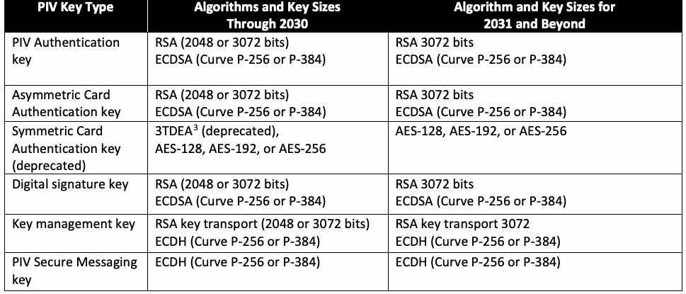
| PIV鍵の種類 | アルゴリズムおよび鍵長 2030年まで | アルゴリズムおよび鍵長 2031年以降 |
| PIV認証鍵 | RSA（2048または3072ビット） ECDSA（曲線P-256またはP-384） | RSA 3072ビット ECDSA（曲線P-256またはP-384） |
| 非対称カード認証鍵 | RSA（2048または3072ビット） ECDSA（曲線P-256またはP-384） | RSA 3072ビット ECDSA（曲線P-256またはP-384） |
| 共通鍵カード認証鍵（非推奨） | 3TDEA3（非推奨）、 AES-128、AES-192、またはAES-256 | AES-128、AES-192、またはAES-256 |
| デジタル署名鍵 | RSA（2048または3072ビット） ECDSA（曲線P-256またはP-384） | RSA 3072ビット ECDSA（曲線P-256またはP-384） |
| 鍵管理鍵 | RSA鍵配送（2048または3072ビット） ECDH（曲線P-256またはP-384） | RSA鍵配送 3072 ECDH（曲線P-256またはP-384） |
| PIVセキュアメッセージング鍵 | ECDH（曲線P-256またはP-384） | ECDH（曲線P-256またはP-384） |
In addition to the key sizes, keys must be generated using secure parameters. Rivest-Shamir-Adleman (RSA) keys must be generated using a public exponent of 65537. Elliptic curve keys must correspond to one of the following recommended curves from [FIPS186]:
鍵長に加え、鍵は安全なパラメータを使用して生成しなければならない。Rivest-Shamir-Adleman（RSA）鍵は、公開指数65537を使用して生成しなければならない。楕円曲線鍵は、[FIPS186]で推奨される次のいずれかの曲線に対応しなければならない。
•Curve P-256 or
•曲線P-256、または
•Curve P-384.
•曲線P-384。
Elliptic curve keys are a faster option than RSA-based keys for the Card Authentication key for physical access since elliptic curve private key computation time is significantly shorter than RSA-based private key computation time. There is no phaseout date specified for either curve.
楕円曲線の秘密鍵演算時間はRSAの秘密鍵演算時間より大幅に短いため、物理アクセス用のカード認証鍵には、RSA鍵より楕円曲線鍵を用いる方が高速である。いずれの曲線にも段階的廃止の期日は指定されていない。
If the PIV Card Application supports the virtual contact interface [SP800-73] and the digital signature key, the key management key, or any of the retired key management keys are elliptic curve keys that correspond to Curve P-384, then the PIV Secure Messaging key shall use P-384. Otherwise, it may use P-256 or P-384.
PIVカードアプリケーションが仮想接触インターフェース[SP800-73]をサポートし、デジタル署名鍵、鍵管理鍵、または使用を終了した鍵管理鍵のいずれかが曲線P-384に対応する楕円曲線鍵である場合、PIVセキュアメッセージング鍵にはP-384を使用しなければならない。それ以外の場合は、P-256またはP-384を使用してもよい。
While this specification requires that the RSA public exponent associated with PIV keys be 65537, applications should be able to process RSA public keys that have any public exponent that is an odd positive integer greater than or equal to 65537 and less than \(2^{256}\).
本仕様ではPIV鍵に関連するRSA公開指数を65537とすることを要求するが、アプリケーションは、65537以上かつ\(2^{256}\)未満の任意の奇数の正整数を公開指数に持つRSA公開鍵を処理できるようにすべきである。
This specification requires the key management key to be an RSA key transport key or an Elliptic Curve Diffie-Hellman (ECDH) key. The specifications for RSA key transport are [PKCS1] and [SP800-56B], and the specification for ECDH key agreement is [SP800-56A].
本仕様では、鍵管理鍵をRSA鍵配送鍵または楕円曲線Diffie-Hellman（ECDH）鍵とすることを要求する。RSA鍵配送の仕様は[PKCS1]および[SP800-56B]であり、ECDH鍵合意の仕様は[SP800-56A]である。
3.2. Authentication Information Stored on the PIV Card
3.2. PIVカードに保存される認証情報
3.2.1. Specification of Digital Signatures on Authentication Information
3.2.1. 認証情報に対するデジタル署名の仕様
FIPS 201-3 requires the use of digital signatures to protect the integrity and authenticity of information stored on the PIV Card. FIPS 201-3 and SP 800-73 require digital signatures on the following objects stored on the PIV Card:
FIPS 201-3は、PIVカードに保存された情報の完全性および真正性を保護するため、デジタル署名の使用を求めている。FIPS 201-3およびSP 800-73は、PIVカードに保存される次のオブジェクトへのデジタル署名を求めている。
•X.509 public key certificates,
•X.509公開鍵証明書、
•The optional secure messaging card verifiable certificate (CVC),
•任意のセキュアメッセージング・カード検証可能証明書（CVC）、
•The optional intermediate CVC,
•任意の中間CVC、
•The CHUID,
•CHUID、
•Biometric information (e.g., fingerprints), and
•生体情報（例：指紋）、および
•The SP 800-73-4 Security Object.
•SP 800-73-4セキュリティオブジェクト。
Approved digital signature algorithms are specified in [FIPS186]. Table 2 provides specific requirements for public key algorithms as well as key sizes, hash algorithms, and padding schemes for generating digital signatures for digitally signed information stored on the PIV Card. Agencies are cautioned that generating digital signatures with elliptic curve algorithms may initially limit interoperability.
承認済みデジタル署名アルゴリズムは[FIPS186]で規定される。表2では、PIVカードに保存されるデジタル署名付き情報にデジタル署名を生成するための公開鍵アルゴリズム、鍵長、ハッシュアルゴリズムおよびパディング方式の具体的な要件を示す。楕円曲線アルゴリズムを用いたデジタル署名の生成は、当初、相互運用性を制限する可能性があるため、機関は注意すること。
Table 2. Signature algorithm and key size requirements for PIV information
表2. PIV情報に対する署名アルゴリズムおよび鍵長の要件
| Public Key Algorithms | Hash Algorithms | Padding Scheme | |
| and Key Sizes | |||
| Through 2030 | RSA (2048, 3072 or 4096) | SHA-256 or SHA-384 | PKCS #1 v1.5 |
| SHA-256 or SHA-384 | PSS | ||
| ECDSA (Curve P-256) | SHA-256 | N/A | |
| ECDSA (Curve P-384) | SHA-384 | N/A | |
| 2031 and Beyond | RSA (3072 or 4096) | SHA-256 or SHA-384 | PKCS #1 v1.5 |
| SHA-256 or SHA-384 | PSS | ||
| ECDSA (Curve P-256) | SHA-256 | N/A | |
| ECDSA (Curve P-384) | SHA-384 | N/A |
原本PDFの抜粋画像
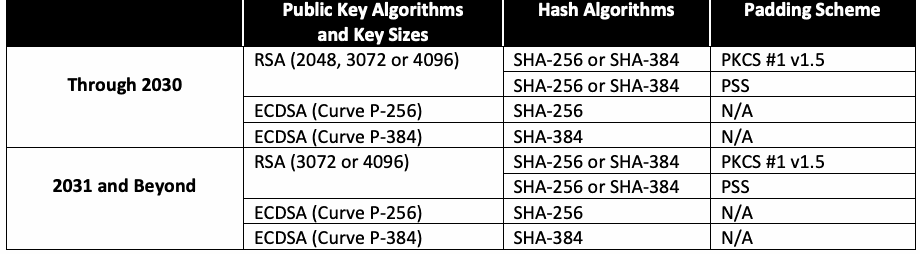
| 公開鍵アルゴリズムと鍵長 | ハッシュアルゴリズム | パディング方式 | |
| 2030年まで | RSA（2048、3072または4096） | SHA-256またはSHA-384 | PKCS #1 v1.5 |
| SHA-256またはSHA-384 | PSS | ||
| ECDSA（曲線P-256） | SHA-256 | N/A | |
| ECDSA（曲線P-384） | SHA-384 | N/A | |
| 2031年以降 | RSA（3072または4096） | SHA-256またはSHA-384 | PKCS #1 v1.5 |
| SHA-256またはSHA-384 | PSS | ||
| ECDSA（曲線P-256） | SHA-256 | N/A | |
| ECDSA（曲線P-384） | SHA-384 | N/A |
RSA signatures may use either the PKCS #1 v1.5 padding scheme or the Probabilistic Signature Scheme (PSS) padding, as specified in [FIPS186] through reference to [PKCS1]. The PSS padding scheme object identifier (OID) is independent of the hash algorithm. The hash algorithm is specified as a parameter [PKCS1].
RSA署名では、[FIPS186]が[PKCS1]を参照して規定するPKCS #1 v1.5パディング方式または確率的署名方式（PSS）パディングのいずれかを使用してよい。PSSパディング方式のオブジェクト識別子（OID）はハッシュアルゴリズムに依存しない。ハッシュアルゴリズムはパラメータとして指定する[PKCS1]。
The secure messaging CVC shall be signed using ECDSA (Curve P-256) with SHA-256 if it contains an ECDH (Curve P-256) subject public key and shall be signed using ECDSA (Curve P-384) with SHA-384 otherwise. The Intermediate CVC shall be signed using RSA with SHA-256 and PKCS #1 v1.5 padding.
セキュアメッセージングCVCに曲線P-256のECDHサブジェクト公開鍵が含まれる場合、同CVCはSHA-256を用いた曲線P-256のECDSAで署名しなければならない。それ以外の場合は、SHA-384を用いた曲線P-384のECDSAで署名しなければならない。中間CVCは、SHA-256およびPKCS #1 v1.5パディングを用いたRSAで署名しなければならない。
FIPS 201-3, SP 800-73, and SP 800-76 specify formats for the CHUID, the Security Object, the biometric information, and X.509 public key certificates, which rely on OIDs to specify which signature algorithm was used to generate the digital signature. The object identifiers specified in Table 3 must be used in FIPS 201-3 implementations to identify the signature algorithm.4,5
FIPS 201-3、SP 800-73およびSP 800-76は、CHUID、セキュリティオブジェクト、生体情報、およびX.509公開鍵証明書の形式を規定しており、これらの形式ではデジタル署名の生成に使用した署名アルゴリズムをOIDで示す。FIPS 201-3の実装では、署名アルゴリズムを識別するため表3に示すオブジェクト識別子を使用しなければならない。4,5
Table 3. FIPS 201-3 signature algorithm object identifiers
表3. FIPS 201-3の署名アルゴリズム・オブジェクト識別子
| Signature Algorithm | Object Identifier (OID) |
| RSA with SHA-1 and PKCS #1 v1.5 padding | sha1WithRSAEncryption ::= {iso(1) member-body(2) us(840) rsadsi(113549) pkcs(1) pkcs-1(1) 5} |
| RSA with SHA-256 and PKCS #1 v1.5 padding | sha256WithRSAEncryption ::= {iso(1) member-body(2) us(840) rsadsi(113549) pkcs(1) pkcs-1(1) 11} |
| RSA with SHA-256 and PSS padding | id-RSASSA-PSS ::= {iso(1) member-body(2) us(840) rsadsi(113549) pkcs(1) pkcs-1(1) 10} |
| RSA with SHA-384 and PKCS #1 v1.5 padding | Sha384WithRSAEncryption ::= {iso(1) member-body(2) us(840) rsadsi(113549) pkcs(1) pkcs-1(1) 12} |
| RSA with SHA-384 and PSS padding | id-RSASSA-PSS ::= {iso(1) member-body(2) us(840) rsadsi(113549) pkcs(1) pkcs-1(1) 10} |
| ECDSA with SHA-256 | ecdsa-with-SHA256 ::= {iso(1) member-body(2) us(840) ansi-X9-62(10045) signatures(4) ecdsa-with-SHA2 (3) 2} |
| ECDSA with SHA-384 | ecdsa-with-SHA384 ::= {iso(1) member-body(2) us(840) ansi-X9-62(10045) signatures(4) ecdsa-with-SHA2 (3) 3} |
原本PDFの抜粋画像
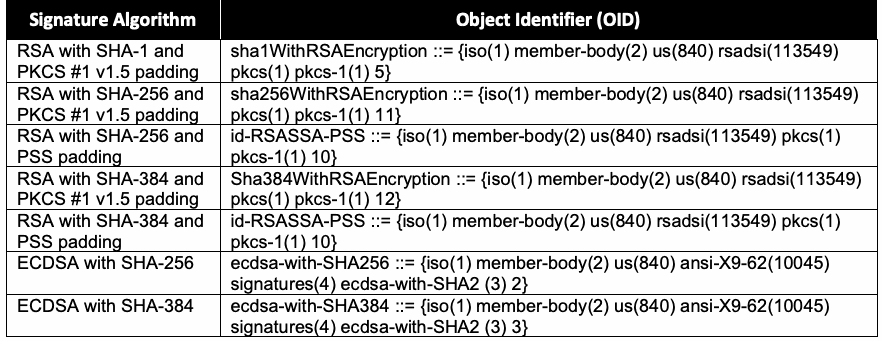
| 署名アルゴリズム | オブジェクト識別子（OID） |
| SHA-1およびPKCS #1 v1.5パディングを用いたRSA | sha1WithRSAEncryption ::= {iso(1) member-body(2) us(840) rsadsi(113549) pkcs(1) pkcs-1(1) 5} |
| SHA-256およびPKCS #1 v1.5パディングを用いたRSA | sha256WithRSAEncryption ::= {iso(1) member-body(2) us(840) rsadsi(113549) pkcs(1) pkcs-1(1) 11} |
| SHA-256およびPSSパディングを用いたRSA | id-RSASSA-PSS ::= {iso(1) member-body(2) us(840) rsadsi(113549) pkcs(1) pkcs-1(1) 10} |
| SHA-384およびPKCS #1 v1.5パディングを用いたRSA | Sha384WithRSAEncryption ::= {iso(1) member-body(2) us(840) rsadsi(113549) pkcs(1) pkcs-1(1) 12} |
| SHA-384およびPSSパディングを用いたRSA | id-RSASSA-PSS ::= {iso(1) member-body(2) us(840) rsadsi(113549) pkcs(1) pkcs-1(1) 10} |
| SHA-256を用いたECDSA | ecdsa-with-SHA256 ::= {iso(1) member-body(2) us(840) ansi-X9-62(10045) signatures(4) ecdsa-with-SHA2 (3) 2} |
| SHA-384を用いたECDSA | ecdsa-with-SHA384 ::= {iso(1) member-body(2) us(840) ansi-X9-62(10045) signatures(4) ecdsa-with-SHA2 (3) 3} |
3.2.2. Specification of Public Keys in X.509 Certificates
3.2.2. X.509証明書における公開鍵の仕様
FIPS 201-3 requires the generation and storage of an X.509 certificate to correspond with each asymmetric private key contained on the PIV Card, except for the PIV Secure Messaging key. X.509 certificates include object identifiers to specify the cryptographic algorithm associated with a public key. Table 4 specifies the object identifiers that may be used in certificates to indicate the algorithm for a subject public key.
FIPS 201-3は、PIVセキュアメッセージング鍵を除き、PIVカードに格納される各非対称秘密鍵に対応するX.509証明書の生成および保存を求めている。X.509証明書には、公開鍵に関連付けられた暗号アルゴリズムを示すオブジェクト識別子が含まれる。表4では、サブジェクト公開鍵のアルゴリズムを示すため証明書で使用してよいオブジェクト識別子を規定する。
Table 4. Public key object identifiers for PIV key types
表4. PIV鍵の種類に対する公開鍵オブジェクト識別子
| PIV Key Type | Asymmetric Algorithm | |
| Object Identifier (OID) | ||
| PIV Authentication key, Card Authentication key, digital signature key | RSA | {iso(1) member-body(2) us(840) rsadsi(113549) pkcs(1) pkcs-1(1) 1} |
| ECDSA | {iso(1) member-body(2) us(840) ansi-X9-62(10045) id-publicKeyType(2) 1} | |
| Key management key | RSA | {iso(1) member-body(2) us(840) rsadsi(113549) pkcs(1) pkcs-1(1) 1} |
| ECDH | {iso(1) member-body(2) us(840) ansi-X9-62(10045) id-publicKeyType(2) 1} |
原本PDFの抜粋画像
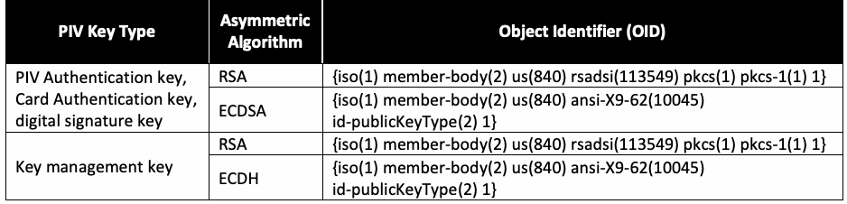
| PIV鍵の種類 | 公開鍵アルゴリズム | |
| オブジェクト識別子（OID） | ||
| PIV認証鍵、カード認証鍵、デジタル署名鍵 | RSA | {iso(1) member-body(2) us(840) rsadsi(113549) pkcs(1) pkcs-1(1) 1} |
| ECDSA | {iso(1) member-body(2) us(840) ansi-X9-62(10045) id-publicKeyType(2) 1} | |
| 鍵管理鍵 | RSA | {iso(1) member-body(2) us(840) rsadsi(113549) pkcs(1) pkcs-1(1) 1} |
| ECDH | {iso(1) member-body(2) us(840) ansi-X9-62(10045) id-publicKeyType(2) 1} |
A single object identifier is specified in Table 4 for all elliptic curve keys. An additional object identifier must be supplied in a parameters field to indicate the elliptic curve associated with the key.6 Table 5 identifies the named curves and associated OIDs.
表4では、すべての楕円曲線鍵に対して単一のオブジェクト識別子を規定している。鍵に対応する楕円曲線を示すには、パラメータフィールドに追加のオブジェクト識別子を指定しなければならない。6表5に、名前付き曲線と対応するOIDを示す。
Table 5. ECC parameter object identifiers for approved curves
表5. 承認済み曲線に対するECCパラメータ・オブジェクト識別子
| Asymmetric Algorithm | Object Identifier (OID) |
| Curve P-256 | ansip256r1 ::= { iso(1) member-body(2) us(840) ansi-X9-62(10045) curves(3) prime(1) 7 } |
| Curve P-384 | ansip384r1 ::= { iso(1) identified-organization(3) certicom(132) curve(0) 34 } |
原本PDFの抜粋画像
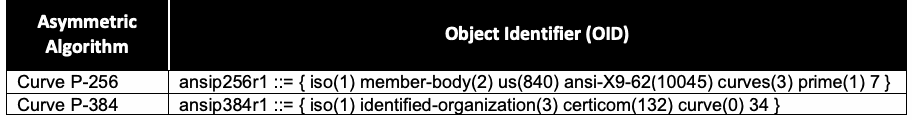
| 公開鍵アルゴリズム | オブジェクト識別子（OID） |
| 曲線P-256 | ansip256r1 ::= { iso(1) member-body(2) us(840) ansi-X9-62(10045) curves(3) prime(1) 7 } |
| 曲線P-384 | ansip384r1 ::= { iso(1) identified-organization(3) certicom(132) curve(0) 34 } |
3.2.3. Specification of Message Digests in the SP 800-73-4 Security Object
3.2.3. SP 800-73-4セキュリティオブジェクトにおけるメッセージダイジェストの仕様
SP 800-73 mandates the inclusion of a Security Object consistent with the Authenticity/Integrity Code defined by the International Civil Aviation Organization (ICAO) in [MRTD]. This object contains message digests of other digital information stored on the PIV Card and is digitally signed. This specification requires that the message digests of digital information be computed using the same hash algorithm used to generate the digital signature on the Security Object. The set of acceptable algorithms is specified in Table 2. The Security Object format identifies the hash algorithm used when computing the message digests by including an object identifier. The appropriate object identifiers are identified in Table 6.
SP 800-73は、[MRTD]で国際民間航空機関（ICAO）が定義する真正性・完全性コードに準拠したセキュリティオブジェクトの含有を義務付ける。このオブジェクトには、PIVカードに保存された他のデジタル情報のメッセージダイジェストが含まれ、デジタル署名される。本仕様では、デジタル情報のメッセージダイジェストを、セキュリティオブジェクトへのデジタル署名の生成に使用したものと同じハッシュアルゴリズムで計算するよう求めている。使用可能なアルゴリズムの集合は表2で規定する。セキュリティオブジェクトの形式では、メッセージダイジェストの計算に使用したハッシュアルゴリズムをオブジェクト識別子で示す。該当するオブジェクト識別子を表6に示す。
Table 6. Hash algorithm object identifiers
表6. ハッシュアルゴリズムのオブジェクト識別子
| Hash Algorithm | Object Identifier (OID) |
| SHA-256 | id-sha256 ::= {joint-iso-itu-t(2) country(16) us(840) organization(1) gov(101) csor(3) nistalgorithm(4) hashalgs(2) 1} |
| SHA-384 | id-sha384 ::= {joint-iso-itu-t(2) country(16) us(840) organization(1) gov(101) csor(3) nistalgorithm(4) hashalgs(2) 2} |
原本PDFの抜粋画像
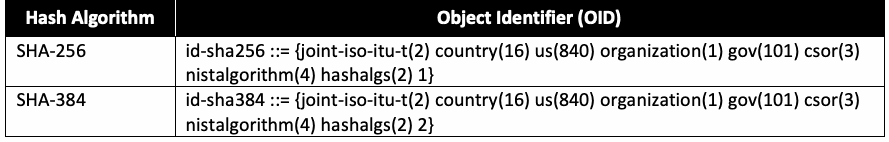
| ハッシュアルゴリズム | オブジェクト識別子（OID） |
| SHA-256 | id-sha256 ::= {joint-iso-itu-t(2) country(16) us(840) organization(1) gov(101) csor(3) nistalgorithm(4) hashalgs(2) 1} |
| SHA-384 | id-sha384 ::= {joint-iso-itu-t(2) country(16) us(840) organization(1) gov(101) csor(3) nistalgorithm(4) hashalgs(2) 2} |
4. Certificate Status Information
4. 証明書状態情報
The FIPS 201-3 functional component PIV Card Issuance and Management Subsystem generates and distributes status information for PIV asymmetric keys other than PIV Secure Messaging keys. FIPS 201-2 mandates two formats for certificate status information:
FIPS 201-3の機能コンポーネントであるPIVカード発行・管理サブシステムは、PIVセキュアメッセージング鍵を除くPIV非対称鍵の状態情報を生成して配布する。FIPS 201-2は、証明書状態情報の形式として次の2種類を義務付ける。
1.X.509 CRLs and
1.X.509 CRL、および
2.OCSP status response messages.
2.OCSP状態応答メッセージ。
The CRLs and OCSP status responses shall be digitally signed to support authentication and integrity using a key size and hash algorithm that satisfy the requirements for signing PIV information, as specified in Table 2, and that are at least as large as the key size and hash algorithm used to sign the certificate.
CRLおよびOCSP状態応答は、表2で規定するPIV情報の署名要件を満たし、かつ証明書の署名に使用した鍵長およびハッシュアルゴリズム以上である鍵長およびハッシュアルゴリズムを用いて、認証および完全性を支えるためデジタル署名されなければならない。
CRLs and OCSP messages rely on object identifiers to specify which signature algorithm was used to generate the digital signature. The object identifiers specified in Table 3 must be used in CRLs and OCSP messages to identify the signature algorithm.
CRLおよびOCSPメッセージでは、デジタル署名の生成に使用した署名アルゴリズムをオブジェクト識別子で示す。署名アルゴリズムを識別するため、表3に規定するオブジェクト識別子をCRLおよびOCSPメッセージで使用しなければならない。
5. PIV Card Application Administration Keys
5. PIVカードアプリケーション管理鍵
PIV Cards may support card activation by the card management system to support card personalization and post-issuance card updates. PIV Cards that support card personalization and post-issuance updates perform a challenge-response protocol using a symmetric cryptographic key (i.e., the PIV Card Application Administration Key) to authenticate the card management system. After successful authentication, the card management system can modify information stored on the PIV Card. Table 7 establishes specific requirements for cryptographic algorithms and key sizes for PIV Card Application Administration Keys.
PIVカードは、カードの個人化および発行後の更新を支援するため、カード管理システムによるカードの有効化をサポートしてよい。カードの個人化および発行後の更新をサポートするPIVカードは、共通鍵暗号鍵（すなわちPIVカードアプリケーション管理鍵）を用いたチャレンジ・レスポンスプロトコルでカード管理システムを認証する。認証に成功すると、カード管理システムはPIVカードに保存された情報を変更できる。表7では、PIVカードアプリケーション管理鍵の暗号アルゴリズムおよび鍵長に関する具体的な要件を定める。
Table 7. Algorithm and key size requirements for PIV Card Application Administration Keys
表7. PIVカードアプリケーション管理鍵のアルゴリズムおよび鍵長の要件
| Card Expiration Date | Algorithm |
| Through December 31, 2030 | 3TDEA (deprecated) AES-128, AES-192, or AES-256 |
| After December 31, 2030 | AES-128, AES-192, or AES-256 |
原本PDFの抜粋画像
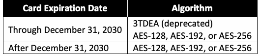
| カード有効期限 | アルゴリズム |
| 2030年12月31日まで | 3TDEA（非推奨） AES-128、AES-192またはAES-256 |
| 2030年12月31日より後 | AES-128、AES-192またはAES-256 |
6. Identifiers for PIV Card Interfaces
6. PIVカードインターフェースの識別子
SP 800-73 defines an application programming interface, the PIV Client Application Programming Interface (Part 3), and a set of mandatory card commands, the PIV Card Application Card Command Interface (Part 2). The command syntaxes for these interfaces identify PIV keys using one-byte key references, and their associated algorithms (or suites of algorithms) are specified using one-byte algorithm identifiers. The same identifiers are used in both interfaces.
SP 800-73は、アプリケーションプログラミングインターフェースであるPIVクライアントアプリケーションプログラミングインターフェース（第3部）と、必須カードコマンド一式であるPIVカードアプリケーション・カードコマンドインターフェース（第2部）を定義する。これらのインターフェースのコマンド構文では、1バイトの鍵参照値でPIV鍵を識別し、対応するアルゴリズム（またはアルゴリズム群）を1バイトのアルゴリズム識別子で指定する。両方のインターフェースで同じ識別子を使用する。
Section 6.1 specifies the key reference values for each of the PIV key types. Section 6.2 defines algorithm identifiers for each cryptographic algorithm supported by this specification. Section 6.3 identifies valid combinations of key reference values and algorithm identifiers.
6.1節では、各PIV鍵の種類に対する鍵参照値を規定する。6.2節では、本仕様がサポートする各暗号アルゴリズムのアルゴリズム識別子を定義する。6.3節では、鍵参照値とアルゴリズム識別子の有効な組み合わせを示す。
6.1. Key Reference Values
6.1. 鍵参照値
A PIV Card key reference is a one-byte identifier that specifies a cryptographic key according to its PIV Key Type. Table 8 defines the key reference values used on the PIV interfaces for PIV Key Types.
PIVカードの鍵参照値は、PIV鍵の種類に従って暗号鍵を指定する1バイトの識別子である。表8では、PIV鍵の種類に対してPIVインターフェースで使用する鍵参照値を定義する。
Table 8. Key references for PIV Key Types
表8. PIV鍵の種類に対する鍵参照値
| PIV Key Type | Key Reference Value |
| PIV Secure Messaging key | '04' |
| Retired key management key | '82', '83', '84', '85', '86', '87', '88', '89', '8A', '8B', '8C', '8D', '8E', '8F', '90', '91', '92', '93', '94', '95' |
| PIV Authentication key | '9A' |
| PIV Card Application Administration Key | '9B' |
| Digital signature key | '9C' |
| Key management key | '9D' |
| Card Authentication key | '9E' |
原本PDFの抜粋画像
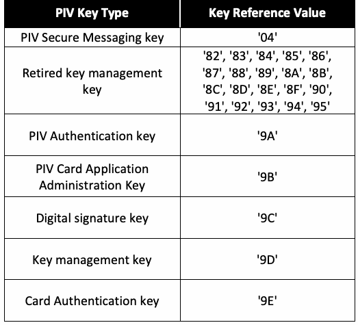
| PIV鍵の種類 | 鍵参照値 |
| PIVセキュアメッセージング鍵 | '04' |
| 廃止済み鍵管理鍵 | '82', '83', '84', '85', '86', '87', '88', '89', '8A', '8B', '8C', '8D', '8E', '8F', '90', '91', '92', '93', '94', '95' |
| PIV認証鍵 | '9A' |
| PIVカードアプリケーション管理鍵 | '9B' |
| デジタル署名鍵 | '9C' |
| 鍵管理鍵 | '9D' |
| カード認証鍵 | '9E' |
6.2. PIV Card Algorithm Identifiers
6.2. PIVカードのアルゴリズム識別子
A PIV Card algorithm identifier is a one-byte identifier that specifies a cryptographic algorithm and key size or a suite of algorithms and key sizes. For symmetric cryptographic operations, the algorithm identifier also specifies a mode of operation (i.e., ECB). Table 9 lists the algorithm identifiers for the cryptographic algorithms that may be recognized on the PIV interfaces. All other algorithm identifier values are reserved for future use.
PIVカードのアルゴリズム識別子は、暗号アルゴリズムおよび鍵長、またはアルゴリズムと鍵長の組を指定する1バイトの識別子である。共通鍵暗号操作では、アルゴリズム識別子は動作モード（すなわちECB）も指定する。表9に、PIVインターフェースで認識される場合がある暗号アルゴリズムの識別子を示す。その他すべてのアルゴリズム識別子の値は、将来の使用のために予約されている。
Table 9. Identifiers for supported cryptographic algorithms
表9. サポートされる暗号アルゴリズムの識別子
| Algorithm Identifier | Algorithm – Mode |
| '00' | 3 Key Triple DES – ECB (deprecated) |
| '03' | 3 Key Triple DES – ECB (deprecated) |
| '05' | RSA 3072 bit modulus, \(65537 \le \text{exponent} \le 2^{256} - 1\) |
| '06' | RSA 1024 bit modulus, \(65537 \le \text{exponent} \le 2^{256} - 1\) |
| '07' | RSA 2048 bit modulus, \(65537 \le \text{exponent} \le 2^{256} - 1\) |
| '08' | AES-128 – ECB |
| '0A' | AES-192 – ECB |
| '0C' | AES-256 – ECB |
| '11' | ECC: Curve P-256 |
| '14' | ECC: Curve P-384 |
| '27' | Cipher Suite 2 |
| '2E' | Cipher Suite 7 |
| アルゴリズム識別子 | アルゴリズム－モード |
| '00' | 3鍵トリプルDES－ECB（非推奨） |
| '03' | 3鍵トリプルDES－ECB（非推奨） |
| '05' | RSA 3072ビット・モジュラス、\(65537 \le \text{指数} \le 2^{256} - 1\) |
| '06' | RSA 1024ビット・モジュラス、\(65537 \le \text{指数} \le 2^{256} - 1\) |
| '07' | RSA 2048ビット・モジュラス、\(65537 \le \text{指数} \le 2^{256} - 1\) |
| '08' | AES-128－ECB |
| '0A' | AES-192－ECB |
| '0C' | AES-256－ECB |
| '11' | ECC：曲線P-256 |
| '14' | ECC：曲線P-384 |
| '27' | 暗号スイート2 |
| '2E' | 暗号スイート7 |
Note that 3 Key Triple DES – ECB with identifier '00' and '03' is deprecated and will be removed in the next revision of this document.
識別子'00'および'03'の3鍵トリプルDES－ECBは非推奨であり、本書の次回改訂で削除されることに注意する。
Algorithm identifiers '27' and '2E' represent suites of algorithms and key sizes for use with secure messaging and key establishment. Cipher Suite 2 (CS2) is used to establish session keys and for secure messaging when the PIV Secure Messaging key is an ECDH (Curve P-256) key. Cipher Suite 7 (CS7) is used to establish session keys and for secure messaging when the PIV Secure Messaging key is an ECDH (Curve P-384) key. Details of secure messaging, the key establishment protocol, and the algorithms and key sizes for these two cipher suites are specified in SP 800-73-4, Part 2.
アルゴリズム識別子'27'および'2E'は、セキュアメッセージングおよび鍵確立で使用するアルゴリズムと鍵長の組を表す。暗号スイート2（CS2）は、PIVセキュアメッセージング鍵がECDH（曲線P-256）鍵の場合に、セッション鍵の確立とセキュアメッセージングに使用する。暗号スイート7（CS7）は、PIVセキュアメッセージング鍵がECDH（曲線P-384）鍵の場合に、セッション鍵の確立とセキュアメッセージングに使用する。これら2つの暗号スイートに関するセキュアメッセージング、鍵確立プロトコル、ならびにアルゴリズムと鍵長の詳細は、SP 800-73-4第2部で規定する。
6.3. Algorithm Identifiers for PIV Key Types
6.3. PIV鍵の種類に対するアルゴリズム識別子
Table 10 summarizes the set of algorithms supported for each key reference value.
表10では、各鍵参照値でサポートされるアルゴリズムの集合を要約する。
All cryptographic algorithms employed shall provide at least 112 bits of security strength. Cryptographic keys that will remain in use after 2030 should provide 128 bits of security strength.7 Federal departments and agencies should consider potential cryptographic key length migrations as part of their moderate to long-term cryptographic transition and modernization plans, including the need to plan and invest for a future migration to post-quantum algorithms. Capital investments for PIV issuance and relying party systems should be selected with an emphasis on ensuring a timely migration to post-quantum algorithms once standards, technologies, and services are available. If a migration to longer cryptographic keys would require significant resources or infrastructure upgrades, federal departments and agencies may elect to defer these improvements until the post-quantum migration. Post-quantum algorithms will be specified in a future revision of this document once foundational standards supporting their use have been adopted.
使用するすべての暗号アルゴリズムは、少なくとも112ビットのセキュリティ強度を提供しなければならない。2030年を過ぎても使用する暗号鍵は、128ビットのセキュリティ強度を提供すべきである。7連邦省庁および機関は、中長期的な暗号移行・近代化計画の一環として、将来の耐量子アルゴリズムへの移行を計画し、そのために投資する必要性を含め、暗号鍵長の移行を検討すべきである。PIV発行システムおよび依拠当事者システムへの設備投資は、標準、技術およびサービスが利用可能になった後、耐量子アルゴリズムへ速やかに移行できることを重視して選定すべきである。より長い暗号鍵への移行に多大なリソースまたはインフラストラクチャの更新が必要となる場合、連邦省庁および機関は、耐量子移行までこうした改善を延期してよい。耐量子アルゴリズムの利用を支える基盤標準が採用された後、本書の将来の改訂版で耐量子アルゴリズムを規定する。
Table 10. PIV Card keys: Key references and algorithms
表10. PIVカード鍵：鍵参照値とアルゴリズム
| PIV Key Type | Key Reference Value | Algorithm Identifiers | Algorithm Identifiers |
| Through 2030 | After 2030 | ||
| PIV Secure Messaging key | '04' | '27', '2E' | '27', '2E' |
| Retired key management key | '82', '83', '84', '85', '86', '87', '88', '89', '8A', '8B', '8C', '8D', '8E', '8F', '90', '91', '92', '93', '94', '95' | '05', '06', '07', '11', '14' | '05', '06', '07', '11', '14' |
| PIV Authentication key | '9A' | '05','07', '11', '14' | '05', '11', '14' |
| PIV Card Application Administration Key | '9B' | '00', '03', '08', '0A', '0C' | '08', '0A', '0C' |
| Digital signature key | '9C' | '05', '07', '11', '14' | '05', '11', '14' |
| Key management key | '9D' | '05','07', '11', '14' | '05', '11', '14' |
| Asymmetric Card Authentication key | '9E' | '05','07', '11', '14' | '05', '11', '14' |
| Symmetric Card Authentication key (deprecated) | '9E' | '00', '03', '08', '0A', '0C' | '08', '0A', '0C' |
原本PDFの抜粋画像
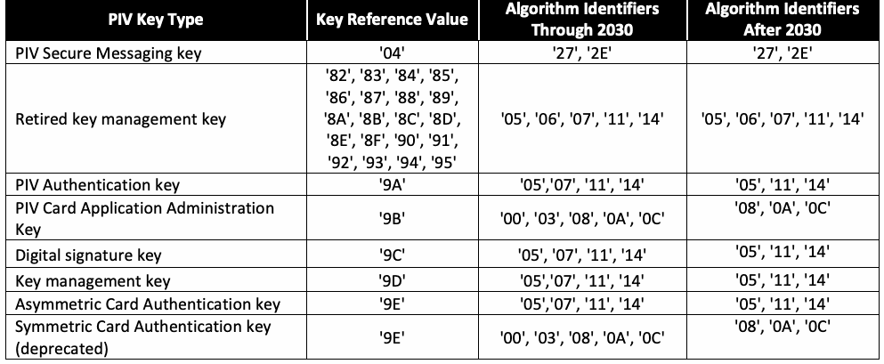
| PIV鍵の種類 | 鍵参照値 | アルゴリズム識別子 | アルゴリズム識別子 |
| 2030年まで | 2030年より後 | ||
| PIVセキュアメッセージング鍵 | '04' | '27', '2E' | '27', '2E' |
| 廃止済み鍵管理鍵 | '82', '83', '84', '85', '86', '87', '88', '89', '8A', '8B', '8C', '8D', '8E', '8F', '90', '91', '92', '93', '94', '95' | '05', '06', '07', '11', '14' | '05', '06', '07', '11', '14' |
| PIV認証鍵 | '9A' | '05', '07', '11', '14' | '05', '11', '14' |
| PIVカードアプリケーション管理鍵 | '9B' | '00', '03', '08', '0A', '0C' | '08', '0A', '0C' |
| デジタル署名鍵 | '9C' | '05', '07', '11', '14' | '05', '11', '14' |
| 鍵管理鍵 | '9D' | '05', '07', '11', '14' | '05', '11', '14' |
| 非対称カード認証鍵 | '9E' | '05', '07', '11', '14' | '05', '11', '14' |
| 共通鍵カード認証鍵（非推奨） | '9E' | '00', '03', '08', '0A', '0C' | '08', '0A', '0C' |
7. Cryptographic Algorithm Validation Testing Requirements
7. 暗号アルゴリズム検証試験要件
As noted in Section 4.2.2 of [FIPS201], the PIV Card shall be validated under [FIPS140] with an overall validation of Level 2 and with Level 3 physical security. The scope of the Cryptographic Module Validation Program (CMVP) validation shall include all cryptographic operations performed over both contact and contactless interfaces. Table 118 describes the Cryptographic Algorithm Validation Program (CAVP) tests that are required for each supported key and algorithm at the time of publication.9 If any changes are made to the CAVP validation requirements, the changes and the deadlines for conformance with these requirements will be posted on NIST’s Personal Identity Verification Program (NPIVP) web page at https://csrc.nist.gov/projects/nist-personal-identity-verification-program.
[FIPS201]の4.2.2節で述べられているように、PIVカードは、全体の検証レベル2および物理セキュリティレベル3で[FIPS140]に基づく検証を受けなければならない。暗号モジュール検証プログラム（CMVP）による検証の範囲には、接触型および非接触型の両インターフェースを介して実行されるすべての暗号操作を含めなければならない。表118では、公開時点に各サポート対象の鍵とアルゴリズムに必要な暗号アルゴリズム検証プログラム（CAVP）の試験について説明する。9CAVP検証要件に変更があった場合、変更内容および要件への適合期限は、NISTの個人識別検証プログラム（NPIVP）のウェブページ（https://csrc.nist.gov/projects/nist-personal-identity-verification-program）に掲載される。
Table 11. Cryptographic Algorithm Validation Program (CAVP) validation requirements
表11. 暗号アルゴリズム検証プログラム（CAVP）の検証要件
| Supported | Supported | Required | Minimum CAVP Validation Requirements |
| Private Keys | Algorithm | Functionality | |
| PIV Authentication key | 2048-bit RSA | Key Generation and Signature Generation for 2048-bit RSA with public key exponent 65537 | Key Generation: 186-4: 186-4KEY(gen): FIPS186-4_Fixed_e (65537) or FIPS186-4_Random_e PGM(Any Prime Generation Method) Prerequisites: DRBG; SHS Signature Generation: RSASP1 component: (Mod2048) |
| 3072-bit RSA | Key Generation and Signature Generation for 3072-bit RSA with public key exponent 65537 | Key Generation: 186-4: 186-4KEY(gen): FIPS186-4_Fixed_e (65537) or FIPS186-4_Random_e PGM(Any Prime Generation Method) Prerequisites: DRBG; SHS Signature Generation: RSASP1 component: (Mod3072) | |
| ECDSA (Curve P-256) | Key Generation and Signature Generation for Curve P-256 | Key Generation: 186-4: PKG (Public Key Generation): CURVE(P-256 (ExtraRandomBits and/or TestingCandidates)) Prerequisites: DRBG Signature Generation: |
原本PDFの抜粋画像
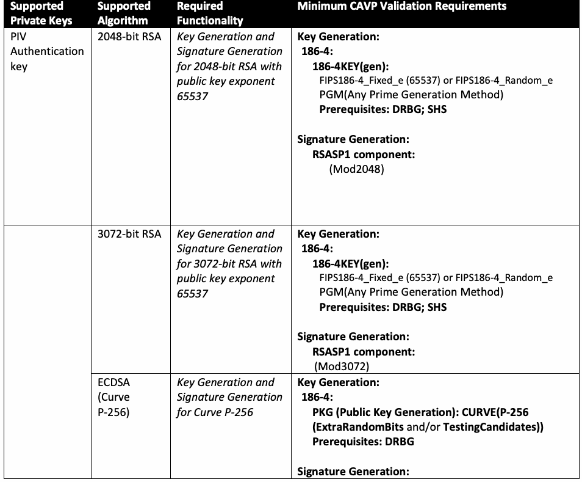
| サポート対象 | サポート対象 | 必須 | CAVP最小検証要件 |
| 秘密鍵 | アルゴリズム | 機能 | |
| PIV認証鍵 | RSA 2048ビット | 公開鍵指数65537のRSA 2048ビットに対する鍵生成および署名生成 | 鍵生成：186-4：186-4KEY(gen)：FIPS186-4_Fixed_e (65537) または FIPS186-4_Random_e PGM（任意の素数生成方式） 前提条件：DRBG；SHS 署名生成：RSASP1コンポーネント：(Mod2048) |
| RSA 3072ビット | 公開鍵指数65537のRSA 3072ビットに対する鍵生成および署名生成 | 鍵生成：186-4：186-4KEY(gen)：FIPS186-4_Fixed_e (65537) または FIPS186-4_Random_e PGM（任意の素数生成方式） 前提条件：DRBG；SHS 署名生成：RSASP1コンポーネント：(Mod3072) | |
| ECDSA（曲線P-256） | 曲線P-256に対する鍵生成および署名生成 | 鍵生成：186-4：PKG（公開鍵生成）：CURVE(P-256 (ExtraRandomBits and/or TestingCandidates)) 前提条件：DRBG 署名生成： |
| Supported | Supported | Required | Minimum CAVP Validation Requirements |
| Private Keys | Algorithm | Functionality | |
| ECDSA Signature Generation component: CURVE(P-256 tested with input length 256 bits) Prerequisites: DRBG | |||
| ECDSA (Curve P-384) | Key Generation and Signature Generation for Curve P-384 | Key Generation: 186-4: PKG (Public Key Generation): CURVE(P-384 (ExtraRandomBits and/or TestingCandidates)) Prerequisites: DRBG Signature Generation: ECDSA Signature Generation component: CURVE(P-384 tested with input length 384 bits) Prerequisites: DRBG | |
| Asymmetric Card Authentication key | 2048-bit RSA | Signature Generation for 2048-bit RSA | Key Generation (if key can be generated on card): 186-4: 186-4KEY(gen): FIPS186-4_Fixed_e (65537) or FIPS186-4_Random_e PGM(Any Prime Generation Method) Prerequisites: DRBG; SHS Signature Generation: RSASP1 component: (Mod2048) |
| 3072-bit RSA | Signature Generation for 3072-bit RSA | Key Generation (if key can be generated on card): 186-4: 186-4KEY(gen): FIPS186-4_Fixed_e (65537) or FIPS186-4_Random_e PGM(Any Prime Generation Method) Prerequisites: DRBG; SHS Signature Generation: RSASP1 component: (Mod3072) | |
| ECDSA (Curve P-256) | Signature Generation for Curve P-256 | Key Generation (if key can be generated on card): 186-4: PKG (Public Key Generation): CURVE(P-256 (ExtraRandomBits and/or TestingCandidates)) Prerequisites: DRBG Signature Generation: ECDSA Signature Generation component: CURVE(P-256 tested with input length 256 bits) Prerequisites: DRBG | |
| ECDSA (Curve P-384) | Signature Generation for Curve P-384 | Key Generation (if key can be generated on card): 186-4: PKG (Public Key Generation): CURVE(P-384 (ExtraRandomBits and/or TestingCandidates)) Prerequisites: DRBG Signature Generation: |
原本PDFの抜粋画像
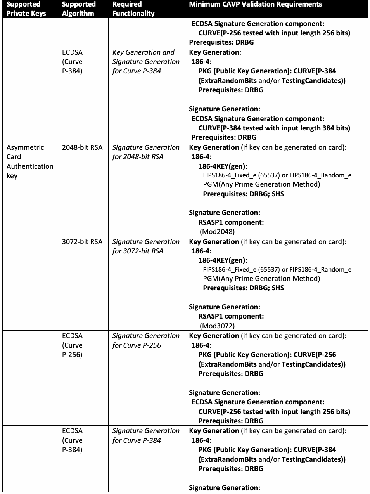
| サポート対象 | サポート対象 | 必須 | CAVP最小検証要件 |
| 秘密鍵 | アルゴリズム | 機能 | |
| ECDSA署名生成コンポーネント：CURVE(P-256、入力長256ビットで試験) 前提条件：DRBG | |||
| ECDSA（曲線P-384） | 曲線P-384に対する鍵生成および署名生成 | 鍵生成：186-4：PKG（公開鍵生成）：CURVE(P-384 (ExtraRandomBits and/or TestingCandidates)) 前提条件：DRBG 署名生成：ECDSA署名生成コンポーネント：CURVE(P-384、入力長384ビットで試験) 前提条件：DRBG | |
| 非対称カード認証鍵 | RSA 2048ビット | RSA 2048ビットに対する署名生成 | 鍵生成（カード上で鍵を生成できる場合）：186-4：186-4KEY(gen)：FIPS186-4_Fixed_e (65537) または FIPS186-4_Random_e PGM（任意の素数生成方式） 前提条件：DRBG；SHS 署名生成：RSASP1コンポーネント：(Mod2048) |
| RSA 3072ビット | RSA 3072ビットに対する署名生成 | 鍵生成（カード上で鍵を生成できる場合）：186-4：186-4KEY(gen)：FIPS186-4_Fixed_e (65537) または FIPS186-4_Random_e PGM（任意の素数生成方式） 前提条件：DRBG；SHS 署名生成：RSASP1コンポーネント：(Mod3072) | |
| ECDSA（曲線P-256） | 曲線P-256に対する署名生成 | 鍵生成（カード上で鍵を生成できる場合）：186-4：PKG（公開鍵生成）：CURVE(P-256 (ExtraRandomBits and/or TestingCandidates)) 前提条件：DRBG 署名生成：ECDSA署名生成コンポーネント：CURVE(P-256、入力長256ビットで試験) 前提条件：DRBG | |
| ECDSA（曲線P-384） | 曲線P-384に対する署名生成 | 鍵生成（カード上で鍵を生成できる場合）：186-4：PKG（公開鍵生成）：CURVE(P-384 (ExtraRandomBits and/or TestingCandidates)) 前提条件：DRBG 署名生成： |
| Supported | Supported | Required | Minimum CAVP Validation Requirements |
| Private Keys | Algorithm | Functionality | |
| ECDSA Signature Generation component: CURVE(P-384 tested with input length 384 bits) Prerequisites: DRBG | |||
| Symmetric Card Authentication key | AES-128 | Encryption and Decryption for AES-128 | ECB ( e/d; 128 ) |
| AES-192 | Encryption and Decryption for AES-192 | ECB ( e/d; 192 ) | |
| AES-256 | Encryption and Decryption for AES-256 | ECB ( e/d; 256 ) | |
| Digital signature key | 2048-bit RSA | Key Generation and Signature Generation for 2048-bit RSA with public key exponent 65537 | Key Generation: 186-4: 186-4KEY(gen): FIPS186-4_Fixed_e (65537) or FIPS186-4_Random_e PGM(Any Prime Generation Method) Prerequisites: DRBG; SHS Signature Generation: RSASP1 component: (Mod2048) |
| 3072-bit RSA | Key Generation and Signature Generation for 3072-bit RSA with public key exponent 65537 | Key Generation: 186-4: 186-4KEY(gen): FIPS186-4_Fixed_e (65537) or FIPS186-4_Random_e PGM(Any Prime Generation Method) Prerequisites: DRBG; SHS Signature Generation: RSASP1 component: (Mod3072) | |
| ECDSA (Curve P-256) | Key Generation and Signature Generation for Curve P-256 | Key Generation: 186-4: PKG (Public Key Generation): CURVE(P-256 (ExtraRandomBits and/or TestingCandidates)) Prerequisites: DRBG Signature Generation: ECDSA Signature Generation component: CURVE(P-256 tested with input length 256 bits) Prerequisites: DRBG | |
| ECDSA (Curve P-384) | Key Generation and Signature Generation for Curve P-384 | Key Generation: 186-4: PKG (Public Key Generation): CURVE(P-384 (ExtraRandomBits and/or TestingCandidates)) Prerequisites: DRBG Signature Generation: |
原本PDFの抜粋画像
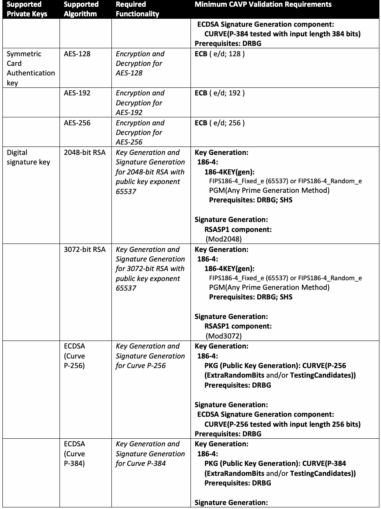
| サポート対象 | サポート対象 | 必須 | CAVP最小検証要件 |
| 秘密鍵 | アルゴリズム | 機能 | |
| ECDSA署名生成コンポーネント：CURVE(P-384、入力長384ビットで試験) 前提条件：DRBG | |||
| 共通鍵カード認証鍵 | AES-128 | AES-128の暗号化および復号 | ECB ( e/d; 128 ) |
| AES-192 | AES-192の暗号化および復号 | ECB ( e/d; 192 ) | |
| AES-256 | AES-256の暗号化および復号 | ECB ( e/d; 256 ) | |
| デジタル署名鍵 | RSA 2048ビット | 公開鍵指数65537のRSA 2048ビットに対する鍵生成および署名生成 | 鍵生成：186-4：186-4KEY(gen)：FIPS186-4_Fixed_e (65537) または FIPS186-4_Random_e PGM（任意の素数生成方式） 前提条件：DRBG；SHS 署名生成：RSASP1コンポーネント：(Mod2048) |
| RSA 3072ビット | 公開鍵指数65537のRSA 3072ビットに対する鍵生成および署名生成 | 鍵生成：186-4：186-4KEY(gen)：FIPS186-4_Fixed_e (65537) または FIPS186-4_Random_e PGM（任意の素数生成方式） 前提条件：DRBG；SHS 署名生成：RSASP1コンポーネント：(Mod3072) | |
| ECDSA（曲線P-256） | 曲線P-256に対する鍵生成および署名生成 | 鍵生成：186-4：PKG（公開鍵生成）：CURVE(P-256 (ExtraRandomBits and/or TestingCandidates)) 前提条件：DRBG 署名生成：ECDSA署名生成コンポーネント：CURVE(P-256、入力長256ビットで試験) 前提条件：DRBG | |
| ECDSA（曲線P-384） | 曲線P-384に対する鍵生成および署名生成 | 鍵生成：186-4：PKG（公開鍵生成）：CURVE(P-384 (ExtraRandomBits and/or TestingCandidates)) 前提条件：DRBG 署名生成： |
| Supported | Supported | Required | Minimum CAVP Validation Requirements |
| Private Keys | Algorithm | Functionality | |
| ECDSA Signature Generation component: CURVE(P-384 tested with input length 384 bits) Prerequisites: DRBG | |||
| Key management key | 2048-bit RSA | 2048-bit RSA Key Transport | Key Generation (if key can be generated on card): 186-4: 186-4KEY(gen): FIPS186-4_Fixed_e (65537) or FIPS186-4_Random_e PGM(Any Prime Generation Method) Prerequisites: DRBG; SHS Key Transport: SP 800-56B RSADP component |
| 3072-bit RSA | 3072-bit RSA Key Transport | Key Generation (if key can be generated on card): 186-4: 186-4KEY(gen): FIPS186-4_Fixed_e (65537) or FIPS186-4_Random_e PGM(Any Prime Generation Method) Prerequisites: DRBG; SHS Key Transport: SP 800-56B RSADP component | |
| ECDH (Curve P-256) | Key Agreement for Curve P-256 | Key Generation (if key can be generated on card): 186-4: PKG (Public Key Generation): CURVE(P-256 (ExtraRandomBits and/or TestingCandidates)) Prerequisites: DRBG Key Agreement: SP 800-56A-3 Section 5.7.1.2 ECC CDH primitive component: CURVE(P-256) | |
| ECDH (Curve P-384) | Key Agreement for Curve P-384 | Key Generation (if key can be generated on card): 186-4: PKG (Public Key Generation): CURVE(P-384 (ExtraRandomBits and/or TestingCandidates)) Prerequisites: DRBG Key Agreement: SP 800-56A-3 Section 5.7.1.2 ECC CDH primitive component: CURVE(P-384) | |
| PIV Card Application Administration Key | AES-128 | Encryption and Decryption for AES-128 | ECB ( e/d; 128 ) |
| AES-192 | Encryption and Decryption for AES-192 | ECB ( e/d; 192 ) | |
| AES-256 | Encryption and Decryption for AES-256 | ECB ( e/d; 256 ) |
原本PDFの抜粋画像
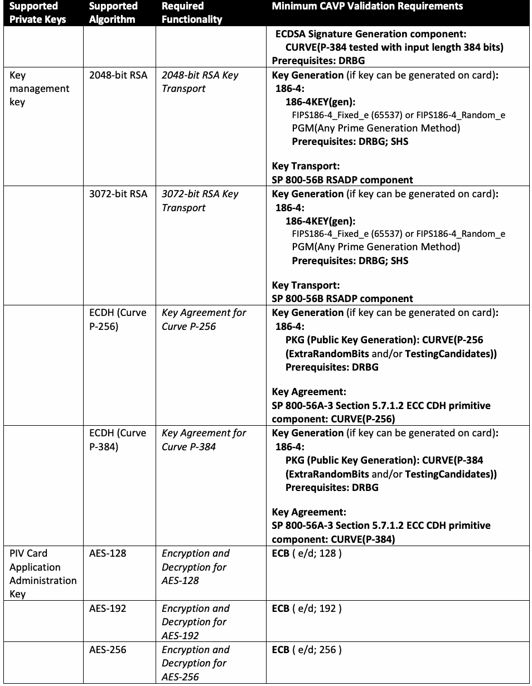
| サポート対象 | サポート対象 | 必須 | CAVP最小検証要件 |
| 秘密鍵 | アルゴリズム | 機能 | |
| ECDSA署名生成コンポーネント：CURVE(P-384、入力長384ビットで試験) 前提条件：DRBG | |||
| 鍵管理鍵 | RSA 2048ビット | RSA 2048ビット鍵配送 | 鍵生成（カード上で鍵を生成できる場合）：186-4：186-4KEY(gen)：FIPS186-4_Fixed_e (65537) または FIPS186-4_Random_e PGM（任意の素数生成方式） 前提条件：DRBG；SHS 鍵配送：SP 800-56B RSADPコンポーネント |
| RSA 3072ビット | RSA 3072ビット鍵配送 | 鍵生成（カード上で鍵を生成できる場合）：186-4：186-4KEY(gen)：FIPS186-4_Fixed_e (65537) または FIPS186-4_Random_e PGM（任意の素数生成方式） 前提条件：DRBG；SHS 鍵配送：SP 800-56B RSADPコンポーネント | |
| ECDH（曲線P-256） | 曲線P-256の鍵合意 | 鍵生成（カード上で鍵を生成できる場合）：186-4：PKG（公開鍵生成）：CURVE(P-256 (ExtraRandomBits and/or TestingCandidates)) 前提条件：DRBG 鍵合意：SP 800-56A-3第5.7.1.2節 ECC CDHプリミティブコンポーネント：CURVE(P-256) | |
| ECDH（曲線P-384） | 曲線P-384の鍵合意 | 鍵生成（カード上で鍵を生成できる場合）：186-4：PKG（公開鍵生成）：CURVE(P-384 (ExtraRandomBits and/or TestingCandidates)) 前提条件：DRBG 鍵合意：SP 800-56A-3第5.7.1.2節 ECC CDHプリミティブコンポーネント：CURVE(P-384) | |
| PIVカードアプリケーション管理鍵 | AES-128 | AES-128の暗号化および復号 | ECB ( e/d; 128 ) |
| AES-192 | AES-192の暗号化および復号 | ECB ( e/d; 192 ) | |
| AES-256 | AES-256の暗号化および復号 | ECB ( e/d; 256 ) |
| Supported | Supported | Required | Minimum CAVP Validation Requirements |
| Private Keys | Algorithm | Functionality | |
| PIV Secure Messaging key | Cipher Suite 2 | Key Generation for Curve P-256 C(1e, 1s, ECC CDH) with Curve P-256 CMAC with AES-128 Encryption and Decryption for AES CBC 128 | Key Generation (of card’s static ECDH key): 186-4: PKG (Public Key Generation): CURVE(P-256 (ExtraRandomBits and/or TestingCandidates)) Prerequisites: DRBG ECC: SCHEME[ OnePassDH ( KC <KARole: Responder > < KCRole: Provider > < KCType: Unilateral > < KDF: Concat > ) ( EC: P-256 (SHA256 CMAC_AES128) ) ] Prerequisites: DRBG; SHS AES CMAC (Generation/Verification) (KS: 128; Msg Len(s) Min: 32 bytes Max: 12 745 bytes; Tag Length(s): 16 bytes ) AES CBC ( e/d; 128 ) |
| Cipher Suite 7 | Key Generation for Curve P-384 C(1e, 1s, ECC CDH) with Curve P-384 CMAC with AES-256 Encryption and Decryption for AES CBC 256 | Key Generation (of card’s static ECDH key): 186-4: PKG (Public Key Generation): CURVE(P-384 (ExtraRandomBits and/or TestingCandidates)) Prerequisites: DRBG ECC: SCHEME[ OnePassDH ( KC <KARole: Responder > < KCRole: Provider > < KCType: Unilateral > < KDF: Concat > ) ( ED: P-384 (SHA384 CMAC_AES256) ) ] Prerequisites: DRBG; SHS AES CMAC (Generation/Verification) (KS: 256; Msg Len(s) Min: 32 bytes Max: 12 745 bytes; Tag Length(s): 16 bytes) AES CBC ( e/d; 256 ) |
原本PDFの抜粋画像
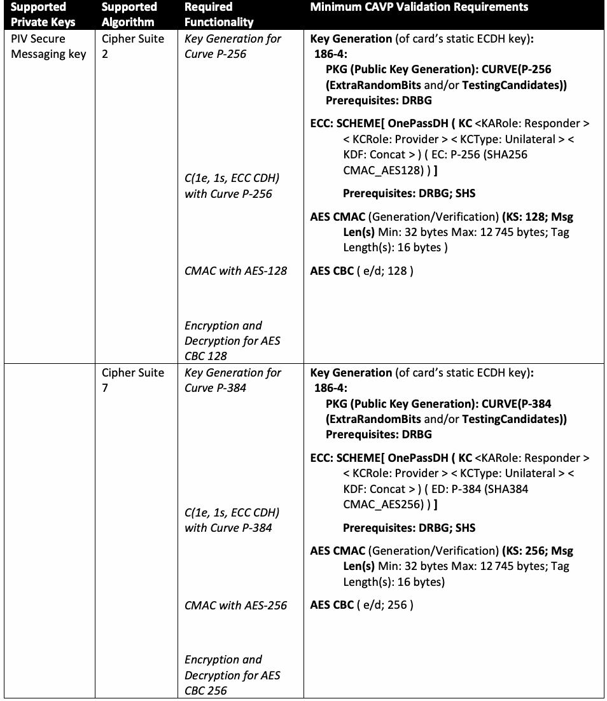
| サポート対象 | サポート対象 | 必須 | CAVP最小検証要件 |
| 秘密鍵 | アルゴリズム | 機能 | |
| PIVセキュアメッセージング鍵 | 暗号スイート2 | 曲線P-256での鍵生成 C(1e, 1s, ECC CDH)（曲線P-256使用）、AES-128を用いたCMAC、AES CBC 128による暗号化および復号 | 鍵生成（カードの静的ECDH鍵）：186-4：PKG（公開鍵生成）：CURVE(P-256 (ExtraRandomBits and/or TestingCandidates)) 前提条件：DRBG ECC：SCHEME[ OnePassDH ( KC <KARole: Responder > < KCRole: Provider > < KCType: Unilateral > < KDF: Concat > ) ( EC: P-256 (SHA256 CMAC_AES128) ) ] 前提条件：DRBG；SHS AES CMAC（生成／検証）（KS: 128；メッセージ長：最小32バイト、最大12 745バイト；タグ長：16バイト） AES CBC ( e/d; 128 ) |
| 暗号スイート7 | 曲線P-384での鍵生成 C(1e, 1s, ECC CDH)（曲線P-384使用）、AES-256を用いたCMAC、AES CBC 256による暗号化および復号 | 鍵生成（カードの静的ECDH鍵）：186-4：PKG（公開鍵生成）：CURVE(P-384 (ExtraRandomBits and/or TestingCandidates)) 前提条件：DRBG ECC：SCHEME[ OnePassDH ( KC <KARole: Responder > < KCRole: Provider > < KCType: Unilateral > < KDF: Concat > ) ( ED: P-384 (SHA384 CMAC_AES256) ) ] 前提条件：DRBG；SHS AES CMAC（生成／検証）（KS: 256；メッセージ長：最小32バイト、最大12 745バイト；タグ長：16バイト） AES CBC ( e/d; 256 ) |
References
参考文献
[FIPS140] National Institute of Standards and Technology (2019) Security Requirements for Cryptographic Modules. (Department of Commerce, Washington, DC), Federal Information Processing Standards Publication (FIPS) NIST FIPS 140-3. https://doi.org/10.6028/NIST.FIPS.140-3
[FIPS140] 米国国立標準技術研究所（2019）「暗号モジュールのセキュリティ要件」。（商務省、ワシントンD.C.）、連邦情報処理規格出版物（FIPS）NIST FIPS 140-3。https://doi.org/10.6028/NIST.FIPS.140-3
[FIPS186] National Institute of Standards and Technology (2023) Digital Signature Standard (DSS). (Department of Commerce, Washington, DC), Federal Information Processing Standards Publication (FIPS) NIST FIPS 186-5. https://doi.org/10.6028/NIST.FIPS.186-5
[FIPS186] 米国国立標準技術研究所（2023）「デジタル署名標準（DSS）」。（商務省、ワシントンD.C.）、連邦情報処理規格出版物（FIPS）NIST FIPS 186-5。https://doi.org/10.6028/NIST.FIPS.186-5
[FIPS197] National Institute of Standards and Technology (2001) Advanced Encryption Standard (AES). (Department of Commerce, Washington, DC), Federal Information Processing Standards Publication (FIPS) NIST FIPS 197-upd1, updated May 9, 2023. https://doi.org/10.6028/NIST.FIPS.197-upd1
[FIPS197] 米国国立標準技術研究所（2001）「高度暗号化標準（AES）」。（商務省、ワシントンD.C.）、連邦情報処理規格出版物（FIPS）NIST FIPS 197-upd1、2023年5月9日更新。https://doi.org/10.6028/NIST.FIPS.197-upd1
[FIPS201] National Institute of Standards and Technology (2022) Personal Identity Verification (PIV) of Federal Employees and Contractors. (U.S. Department of Commerce, Washington, DC), Federal Information Processing Standards Publication (FIPS) NIST FIPS 201-3. https://doi.org/10.6028/NIST.FIPS.201-3
[FIPS201] 米国国立標準技術研究所（2022）「連邦職員および請負業者の個人識別検証（PIV）」。（米国商務省、ワシントンD.C.）、連邦情報処理規格出版物（FIPS）NIST FIPS 201-3。https://doi.org/10.6028/NIST.FIPS.201-3
[MRTD] International Civil Aviation Organization (2008) Machine Readable Travel Documents, Part 3: Machine Readable Official Travel Documents, Volume 2: Specifications for Electronically Enabled MRtds with Biometric Identification Capability. (International Civil Aviation Organization, Montreal, Quebec, Canada), ICAO Document 9303, 3rd edition. Available at http://www.icao.int/publications/pages/publication.aspx?docnum=9303
[MRTD] 国際民間航空機関（2008）「機械読取式渡航文書、第3部：機械読取式公用渡航文書、第2巻：生体識別機能を備えた電子対応MRTDの仕様」。（国際民間航空機関、カナダ・ケベック州モントリオール）、ICAO文書9303、第3版。http://www.icao.int/publications/pages/publication.aspx?docnum=9303 で入手可能。
[PKCS1] Moriarty K (ed.), Kaliski B, Jonsson J, Rusch A, PKCS #1: RSA Cryptography Specifications Version 2.2, RFC 8017, November 2016. Available at https://www.rfc-editor.org/rfc/rfc8017.txt
[PKCS1] Moriarty K（編）、Kaliski B、Jonsson J、Rusch A、「PKCS #1：RSA暗号仕様バージョン2.2」、RFC 8017、2016年11月。https://www.rfc-editor.org/rfc/rfc8017.txt で入手可能。
[SP800-56A] NIST Special Publication 800-56A Revision 3, Recommendation for Pair-Wise Key Establishment Schemes Using Discrete Logarithm Cryptography, April 2018. https://doi.org/10.6028/NIST.SP.800-56Ar3
[SP800-56A] NIST特別刊行物800-56A改訂3「離散対数暗号を用いるペア単位鍵確立方式に関する勧告」、2018年4月。https://doi.org/10.6028/NIST.SP.800-56Ar3
[SP800-56B] NIST Special Publication 800-56B Revision 2, Recommendation for Pair-Wise Key-Establishment Schemes Using Integer Factorization Cryptography, March 2019. https://doi.org/10.6028/NIST.SP.800-56Br2
[SP800-56B] NIST特別刊行物800-56B改訂2「整数因数分解暗号を用いるペア単位鍵確立方式に関する勧告」、2019年3月。https://doi.org/10.6028/NIST.SP.800-56Br2
[SP800-57(1)] NIST Special Publication 800-57, Recommendation for Key Management – Part 1: General (Revision 5), May 2020. https://doi.org/10.6028/NIST.SP.800-57pt1r5
[SP800-57(1)] NIST特別刊行物800-57「鍵管理に関する勧告－第1部：一般」（改訂5）、2020年5月。https://doi.org/10.6028/NIST.SP.800-57pt1r5
[SP800-67] NIST Special Publication 800-67 Revision 2, Recommendation for the Triple Data Encryption Algorithm (TDEA) Block Cipher, November 2017. https://doi.org/10.6028/NIST.SP.800-67r2
[SP800-67] NIST特別刊行物800-67改訂2「トリプルデータ暗号化アルゴリズム（TDEA）ブロック暗号に関する勧告」、2017年11月。https://doi.org/10.6028/NIST.SP.800-67r2
[SP800-73] NIST Special Publication 800-73-5, Interfaces for Personal Identity Verification, May 2024. https://doi.org/10.6028/NIST.SP.800-73pt1-5, https://doi.org/10.6028/NIST.SP.800-73pt2-5, https://doi.org/10.6028/NIST.SP.800-73pt3-5
[SP800-73] NIST特別刊行物800-73-5「個人識別検証のためのインターフェース」、2024年5月。https://doi.org/10.6028/NIST.SP.800-73pt1-5、 https://doi.org/10.6028/NIST.SP.800-73pt2-5、https://doi.org/10.6028/NIST.SP.800-73pt3-5
[SP800-76] NIST Special Publication 800-76-2, Biometric Specifications for Personal Identity Verification, July 2013. https://doi.org/10.6028/NIST.SP.800-76-2
[SP800-76] NIST特別刊行物800-76-2「個人識別検証のための生体情報仕様」、2013年7月。https://doi.org/10.6028/NIST.SP.800-76-2
[SP800-131A] NIST Special Publication 800-131A Revision 2, Transitioning the Use of Cryptographic Algorithms and Key Lengths, March 2019. https://doi.org/10.6028/NIST.SP.800-131Ar2
[SP800-131A] NIST特別刊行物800-131A改訂2「暗号アルゴリズムおよび鍵長の使用移行」、2019年3月。https://doi.org/10.6028/NIST.SP.800-131Ar2
Appendix A. List of Symbols, Abbreviations, and Acronyms
付録A. 記号、略語および頭字語一覧
The following abbreviations and acronyms are used in this standard.
この規格では、次の略語および頭字語を使用する。
3TDEA Three key TDEA (TDEA with Keying Option 1 [SP800-67])
3TDEA 3鍵TDEA（[SP800-67]の鍵付与オプション1を用いたTDEA）
AES Advanced Encryption Standard [FIPS197]
AES 高度暗号化標準[ FIPS197 ]
CAVP Cryptographic Algorithm Validation Program
CAVP 暗号アルゴリズム検証プログラム
CBC Cipher Block Chaining
CBC ブロック暗号連鎖モード
CBEFF Common Biometric Exchange Formats Framework
CBEFF 共通生体情報交換形式フレームワーク
CDH Cofactor Diffie-Hellman
CDH 余因子ディフィー・ヘルマン
CHUID Card Holder Unique Identifier
CHUID カード保有者一意識別子
CMAC Cipher-Based Message Authentication Code
CMAC 暗号ベースのメッセージ認証コード
CMVP Cryptographic Module Validation Program
CMVP 暗号モジュール検証プログラム
CRL Certificate Revocation List
CRL 証明書失効リスト
CVC Card Verifiable Certificate
CVC カード検証可能証明書
DES Data Encryption Standard
DES データ暗号化標準
DRBG Deterministic Random Bit Generator
DRBG 決定論的乱数ビット生成器
ECB Electronic Codebook
ECB 電子符号帳モード
ECC Elliptic Curve Cryptography
ECC 楕円曲線暗号
ECDH Elliptic Curve Diffie-Hellman
ECDH 楕円曲線ディフィー・ヘルマン
ECDSA Elliptic Curve Digital Signature Algorithm
ECDSA 楕円曲線デジタル署名アルゴリズム
ICAO International Civil Aviation Organization
ICAO 国際民間航空機関
OCSP Online Certificate Status Protocol
OCSP オンライン証明書状態プロトコル
OID Object Identifier
OID オブジェクト識別子
PIV Personal Identity Verification
PIV 個人識別検証
PKCS Public-Key Cryptography Standards
PKCS 公開鍵暗号標準
PKI Public Key Infrastructure
PKI 公開鍵基盤
PSS Probabilistic Signature Scheme
PSS 確率的署名方式
RSA Rivest-Shamir-Adleman Cryptographic Algorithm
RSA Rivest-Shamir-Adleman暗号アルゴリズム
SHA Secure Hash Algorithm
SHA セキュアハッシュアルゴリズム
SHS Secure Hash Standard
SHS セキュアハッシュ標準
TDEA Triple Data Encryption Algorithm; Triple DEA
TDEA トリプルデータ暗号化アルゴリズム、トリプルDEA
Appendix B. Change Log
付録B. 変更履歴
This appendix is informative and provides an overview of the changes made to SP 800-78 since its initial release.
この付録は参考情報であり、初版の公開以降にSP 800-78へ加えられた変更の概要を示す。
In August 2007, Revision 1 enhanced alignment with the National Security Agency’s Suite B Cryptography by:
2007年8月の改訂1では、米国国家安全保障局（NSA）のSuite B暗号との整合性を高めるため、次の変更を行った。
•Reducing the set of elliptic curves approved for use with PIV cards from six curves to two,
•PIVカードで使用を承認する楕円曲線を6曲線から2曲線に削減、
•Adding SHA-384 with Curve P-384, and
•曲線P-384でSHA-384を追加、および
•Eliminating the largest size of RSA keys (3072 bits) on PIV cards.
•PIVカード上のRSA鍵の最大長（3072ビット）を廃止。
In February 2010, Revision 2 updates included:
2010年2月の改訂2では、次の更新を行った。
•Realigning with the NSA Suite B Cryptographic specification by removing discontinued Elliptic Curve MQV as a key agreement scheme,
•廃止された鍵合意方式である楕円曲線MQVを削除し、NSA Suite B暗号仕様との整合性を再調整、
•Aligning with FIPS 186-3 by removing RSA 4096 as an algorithm and key size for generating signatures for PIV data objects, and
•PIVデータオブジェクトの署名生成に用いるアルゴリズムおよび鍵長としてRSA 4096を削除し、FIPS 186-3との整合を実施、および
•Eliminating the redundant cipher block chaining (CBC) mode of encryption for symmetric authentication purposes (challenge and response)
•共通鍵認証（チャレンジ・レスポンス）で使用する冗長な暗号ブロック連鎖（CBC）暗号化モードを廃止。
In December 2010, Revision 3 updates included:
2010年12月の改訂3では、次の更新を行った。
•Aligning the set of acceptable RSA public key exponents with FIPS 186-3 and
•許容されるRSA公開鍵指数の集合をFIPS 186-3と整合させ、および
•Extending the permitted use of SHA-1 after December 31, 2010, when signing revocation information under limited circumstances.
•限定的な状況において失効情報に署名する場合、2010年12月31日以降もSHA-1を使用できる期間を延長。
In 2014, Revision 4 updates included:
2014年の改訂4では、次の更新を行った。
•Adding algorithm and key size requirements for secure messaging,
•セキュアメッセージングのアルゴリズムおよび鍵長の要件を追加、
•Adding Cryptographic Algorithm Validation Program (CAVP) validation testing requirements, and
•暗号アルゴリズム検証プログラム（CAVP）の検証試験要件を追加、および
•Clarifying that RSA public keys may only have a public exponent of 65537.
•RSA公開鍵の公開指数は65537に限られることを明確化。
In 2024, Revision 5 updates incorporated the following changes:
2024年の改訂5では、次の変更を取り入れた。
•Table 1 reflects additional higher strength keys with at least 128-bit security and suggested sunsets of lower sized keys by 2030 in anticipation of the recommended migration to 128-bit security strength in 2031,
•表1に、少なくとも128ビットのセキュリティ強度を持つ、より高強度の鍵を追加した。また、2031年に推奨される128ビットのセキュリティ強度への移行を見据え、鍵長の短い鍵を2030年までに段階的に廃止する時期の目安を示した。
•Accommodation of the Secure Messaging Authentication key,
•セキュアメッセージング認証鍵に対応。
•Deprecation of the symmetric card authentication key,
•共通鍵カード認証鍵を非推奨化。
•Deprecation of 3TDEA algorithm with identifiers ‘00’ and ‘03’,
•識別子‘00’および‘03’の3TDEAアルゴリズムを非推奨化。
•Removal of the retired RNG from CAVP PIV component testing, where applicable, and
•該当する場合、CAVPのPIVコンポーネント試験から廃止済みRNGを削除、および
•Removal of the retired FIPS 186-2 Key Generation component testing, where applicable.
•該当する場合、廃止済みFIPS 186-2鍵生成コンポーネント試験を削除。